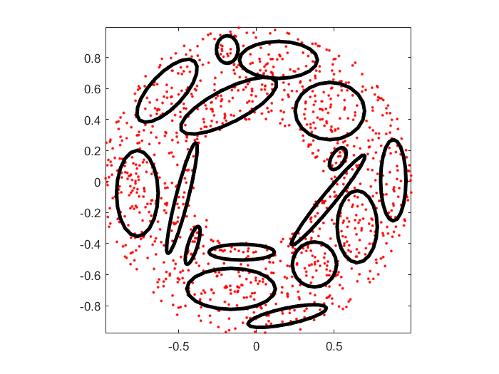
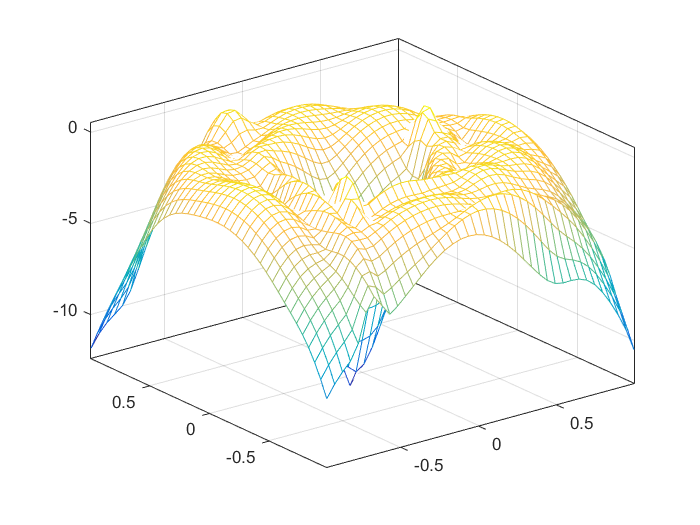
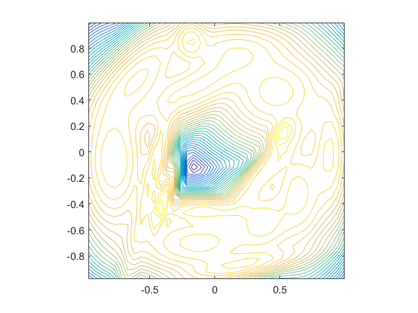

gmmGrow
Increase no. of gaussian components within a GMM
Contents
Syntax
- gmmPrm=gmmGrow(gmmPrm, targetGaussianNum)
Description
gmmPrm=gmmGrow(gmmPrm, targetGaussianNum) performs center splitting until the target no. of Gaussian components is reached.
The target number of Gaussian components should be less than or equal to the original number of Gaussian components.
Example
gmmGrowDemo
Start KMEANS to find the initial mean vectors... Warning: The EraseMode property is no longer supported and will error in a future release. Use the ANIMATEDLINE function for animating lines and points instead of EraseMode 'none'. Removing instances of EraseMode set to 'normal', 'xor', and 'background' has minimal impact. GMM iteration: 0/500, log likelihood. = -2123.364790 GMM iteration: 1/500, log likelihood. = -1880.765770 GMM iteration: 2/500, log likelihood. = -1880.765770 GMM total iteration count = 3, log likelihood. = -1880.765770 Start KMEANS to find the initial mean vectors... Warning: The EraseMode property is no longer supported and will error in a future release. Use the ANIMATEDLINE function for animating lines and points instead of EraseMode 'none'. Removing instances of EraseMode set to 'normal', 'xor', and 'background' has minimal impact. Warning: The EraseMode property is no longer supported and will error in a future release. Use the ANIMATEDLINE function for animating lines and points instead of EraseMode 'none'. Removing instances of EraseMode set to 'normal', 'xor', and 'background' has minimal impact. GMM iteration: 0/500, log likelihood. = -1952.220852 GMM iteration: 1/500, log likelihood. = -1776.870041 GMM iteration: 2/500, log likelihood. = -1759.501605 GMM iteration: 3/500, log likelihood. = -1753.361990 GMM iteration: 4/500, log likelihood. = -1751.979282 GMM iteration: 5/500, log likelihood. = -1751.624802 GMM iteration: 6/500, log likelihood. = -1751.428544 GMM iteration: 7/500, log likelihood. = -1751.257787 GMM iteration: 8/500, log likelihood. = -1751.095261 GMM iteration: 9/500, log likelihood. = -1750.938693 GMM iteration: 10/500, log likelihood. = -1750.787693 GMM iteration: 11/500, log likelihood. = -1750.642125 GMM iteration: 12/500, log likelihood. = -1750.501893 GMM iteration: 13/500, log likelihood. = -1750.366912 GMM iteration: 14/500, log likelihood. = -1750.237092 GMM iteration: 15/500, log likelihood. = -1750.112338 GMM iteration: 16/500, log likelihood. = -1749.992550 GMM iteration: 17/500, log likelihood. = -1749.877617 GMM iteration: 18/500, log likelihood. = -1749.767423 GMM iteration: 19/500, log likelihood. = -1749.661843 GMM iteration: 20/500, log likelihood. = -1749.560747 GMM iteration: 21/500, log likelihood. = -1749.463996 GMM iteration: 22/500, log likelihood. = -1749.371449 GMM iteration: 23/500, log likelihood. = -1749.282960 GMM iteration: 24/500, log likelihood. = -1749.198381 GMM iteration: 25/500, log likelihood. = -1749.117562 GMM iteration: 26/500, log likelihood. = -1749.040352 GMM iteration: 27/500, log likelihood. = -1748.966602 GMM iteration: 28/500, log likelihood. = -1748.896163 GMM iteration: 29/500, log likelihood. = -1748.828890 GMM iteration: 30/500, log likelihood. = -1748.764639 GMM iteration: 31/500, log likelihood. = -1748.703269 GMM iteration: 32/500, log likelihood. = -1748.644646 GMM iteration: 33/500, log likelihood. = -1748.588636 GMM iteration: 34/500, log likelihood. = -1748.535112 GMM iteration: 35/500, log likelihood. = -1748.483951 GMM iteration: 36/500, log likelihood. = -1748.435035 GMM iteration: 37/500, log likelihood. = -1748.388251 GMM iteration: 38/500, log likelihood. = -1748.343490 GMM iteration: 39/500, log likelihood. = -1748.300648 GMM iteration: 40/500, log likelihood. = -1748.259629 GMM iteration: 41/500, log likelihood. = -1748.220337 GMM iteration: 42/500, log likelihood. = -1748.182686 GMM iteration: 43/500, log likelihood. = -1748.146590 GMM iteration: 44/500, log likelihood. = -1748.111973 GMM iteration: 45/500, log likelihood. = -1748.078758 GMM iteration: 46/500, log likelihood. = -1748.046878 GMM iteration: 47/500, log likelihood. = -1748.016266 GMM iteration: 48/500, log likelihood. = -1747.986862 GMM iteration: 49/500, log likelihood. = -1747.958610 GMM iteration: 50/500, log likelihood. = -1747.931456 GMM iteration: 51/500, log likelihood. = -1747.905352 GMM iteration: 52/500, log likelihood. = -1747.880253 GMM iteration: 53/500, log likelihood. = -1747.856117 GMM iteration: 54/500, log likelihood. = -1747.832906 GMM iteration: 55/500, log likelihood. = -1747.810583 GMM iteration: 56/500, log likelihood. = -1747.789117 GMM iteration: 57/500, log likelihood. = -1747.768478 GMM iteration: 58/500, log likelihood. = -1747.748637 GMM iteration: 59/500, log likelihood. = -1747.729569 GMM iteration: 60/500, log likelihood. = -1747.711251 GMM iteration: 61/500, log likelihood. = -1747.693661 GMM iteration: 62/500, log likelihood. = -1747.676779 GMM iteration: 63/500, log likelihood. = -1747.660584 GMM iteration: 64/500, log likelihood. = -1747.645060 GMM iteration: 65/500, log likelihood. = -1747.630189 GMM iteration: 66/500, log likelihood. = -1747.615955 GMM iteration: 67/500, log likelihood. = -1747.602342 GMM iteration: 68/500, log likelihood. = -1747.589333 GMM iteration: 69/500, log likelihood. = -1747.576914 GMM iteration: 70/500, log likelihood. = -1747.565070 GMM iteration: 71/500, log likelihood. = -1747.553785 GMM iteration: 72/500, log likelihood. = -1747.543044 GMM iteration: 73/500, log likelihood. = -1747.532832 GMM iteration: 74/500, log likelihood. = -1747.523132 GMM iteration: 75/500, log likelihood. = -1747.513930 GMM iteration: 76/500, log likelihood. = -1747.505210 GMM iteration: 77/500, log likelihood. = -1747.496955 GMM iteration: 78/500, log likelihood. = -1747.489149 GMM iteration: 79/500, log likelihood. = -1747.481776 GMM iteration: 80/500, log likelihood. = -1747.474819 GMM iteration: 81/500, log likelihood. = -1747.468262 GMM iteration: 82/500, log likelihood. = -1747.462087 GMM iteration: 83/500, log likelihood. = -1747.456279 GMM iteration: 84/500, log likelihood. = -1747.450821 GMM iteration: 85/500, log likelihood. = -1747.445696 GMM iteration: 86/500, log likelihood. = -1747.440889 GMM iteration: 87/500, log likelihood. = -1747.436383 GMM iteration: 88/500, log likelihood. = -1747.432164 GMM iteration: 89/500, log likelihood. = -1747.428215 GMM iteration: 90/500, log likelihood. = -1747.424522 GMM iteration: 91/500, log likelihood. = -1747.421071 GMM iteration: 92/500, log likelihood. = -1747.417847 GMM iteration: 93/500, log likelihood. = -1747.414838 GMM iteration: 94/500, log likelihood. = -1747.412030 GMM iteration: 95/500, log likelihood. = -1747.409411 GMM iteration: 96/500, log likelihood. = -1747.406969 GMM iteration: 97/500, log likelihood. = -1747.404694 GMM iteration: 98/500, log likelihood. = -1747.402573 GMM iteration: 99/500, log likelihood. = -1747.400598 GMM iteration: 100/500, log likelihood. = -1747.398758 GMM iteration: 101/500, log likelihood. = -1747.397044 GMM iteration: 102/500, log likelihood. = -1747.395449 GMM iteration: 103/500, log likelihood. = -1747.393962 GMM iteration: 104/500, log likelihood. = -1747.392578 GMM iteration: 105/500, log likelihood. = -1747.391289 GMM iteration: 106/500, log likelihood. = -1747.390087 GMM iteration: 107/500, log likelihood. = -1747.388968 GMM iteration: 108/500, log likelihood. = -1747.387925 GMM iteration: 109/500, log likelihood. = -1747.386953 GMM iteration: 110/500, log likelihood. = -1747.386046 GMM iteration: 111/500, log likelihood. = -1747.385201 GMM iteration: 112/500, log likelihood. = -1747.384412 GMM iteration: 113/500, log likelihood. = -1747.383675 GMM iteration: 114/500, log likelihood. = -1747.382988 GMM iteration: 115/500, log likelihood. = -1747.382345 GMM iteration: 116/500, log likelihood. = -1747.381745 GMM iteration: 117/500, log likelihood. = -1747.381184 GMM iteration: 118/500, log likelihood. = -1747.380658 GMM iteration: 119/500, log likelihood. = -1747.380167 GMM iteration: 120/500, log likelihood. = -1747.379707 GMM iteration: 121/500, log likelihood. = -1747.379276 GMM iteration: 122/500, log likelihood. = -1747.378872 GMM iteration: 123/500, log likelihood. = -1747.378493 GMM iteration: 124/500, log likelihood. = -1747.378138 GMM iteration: 125/500, log likelihood. = -1747.377804 GMM iteration: 126/500, log likelihood. = -1747.377491 GMM iteration: 127/500, log likelihood. = -1747.377197 GMM iteration: 128/500, log likelihood. = -1747.376920 GMM iteration: 129/500, log likelihood. = -1747.376660 GMM iteration: 130/500, log likelihood. = -1747.376415 GMM iteration: 131/500, log likelihood. = -1747.376185 GMM iteration: 132/500, log likelihood. = -1747.375968 GMM iteration: 133/500, log likelihood. = -1747.375764 GMM iteration: 134/500, log likelihood. = -1747.375572 GMM iteration: 135/500, log likelihood. = -1747.375390 GMM iteration: 136/500, log likelihood. = -1747.375219 GMM iteration: 137/500, log likelihood. = -1747.375057 GMM iteration: 138/500, log likelihood. = -1747.374905 GMM iteration: 139/500, log likelihood. = -1747.374761 GMM iteration: 140/500, log likelihood. = -1747.374625 GMM iteration: 141/500, log likelihood. = -1747.374497 GMM iteration: 142/500, log likelihood. = -1747.374376 GMM iteration: 143/500, log likelihood. = -1747.374261 GMM iteration: 144/500, log likelihood. = -1747.374153 GMM iteration: 145/500, log likelihood. = -1747.374050 GMM iteration: 146/500, log likelihood. = -1747.373953 GMM iteration: 147/500, log likelihood. = -1747.373861 GMM iteration: 148/500, log likelihood. = -1747.373774 GMM iteration: 149/500, log likelihood. = -1747.373692 GMM iteration: 150/500, log likelihood. = -1747.373614 GMM iteration: 151/500, log likelihood. = -1747.373541 GMM iteration: 152/500, log likelihood. = -1747.373471 GMM iteration: 153/500, log likelihood. = -1747.373405 GMM iteration: 154/500, log likelihood. = -1747.373342 GMM iteration: 155/500, log likelihood. = -1747.373282 GMM iteration: 156/500, log likelihood. = -1747.373226 GMM iteration: 157/500, log likelihood. = -1747.373173 GMM iteration: 158/500, log likelihood. = -1747.373122 GMM iteration: 159/500, log likelihood. = -1747.373074 GMM iteration: 160/500, log likelihood. = -1747.373029 GMM iteration: 161/500, log likelihood. = -1747.372986 GMM iteration: 162/500, log likelihood. = -1747.372945 GMM iteration: 163/500, log likelihood. = -1747.372906 GMM iteration: 164/500, log likelihood. = -1747.372869 GMM iteration: 165/500, log likelihood. = -1747.372834 GMM iteration: 166/500, log likelihood. = -1747.372801 GMM iteration: 167/500, log likelihood. = -1747.372770 GMM iteration: 168/500, log likelihood. = -1747.372740 GMM iteration: 169/500, log likelihood. = -1747.372712 GMM iteration: 170/500, log likelihood. = -1747.372685 GMM iteration: 171/500, log likelihood. = -1747.372659 GMM iteration: 172/500, log likelihood. = -1747.372635 GMM iteration: 173/500, log likelihood. = -1747.372612 GMM iteration: 174/500, log likelihood. = -1747.372590 GMM iteration: 175/500, log likelihood. = -1747.372570 GMM iteration: 176/500, log likelihood. = -1747.372550 GMM iteration: 177/500, log likelihood. = -1747.372532 GMM iteration: 178/500, log likelihood. = -1747.372514 GMM iteration: 179/500, log likelihood. = -1747.372497 GMM iteration: 180/500, log likelihood. = -1747.372481 GMM iteration: 181/500, log likelihood. = -1747.372466 GMM iteration: 182/500, log likelihood. = -1747.372452 GMM iteration: 183/500, log likelihood. = -1747.372438 GMM iteration: 184/500, log likelihood. = -1747.372425 GMM iteration: 185/500, log likelihood. = -1747.372413 GMM iteration: 186/500, log likelihood. = -1747.372401 GMM iteration: 187/500, log likelihood. = -1747.372390 GMM iteration: 188/500, log likelihood. = -1747.372380 GMM iteration: 189/500, log likelihood. = -1747.372370 GMM iteration: 190/500, log likelihood. = -1747.372360 GMM iteration: 191/500, log likelihood. = -1747.372351 GMM iteration: 192/500, log likelihood. = -1747.372343 GMM iteration: 193/500, log likelihood. = -1747.372334 GMM iteration: 194/500, log likelihood. = -1747.372327 GMM iteration: 195/500, log likelihood. = -1747.372319 GMM iteration: 196/500, log likelihood. = -1747.372312 GMM iteration: 197/500, log likelihood. = -1747.372306 GMM iteration: 198/500, log likelihood. = -1747.372300 GMM iteration: 199/500, log likelihood. = -1747.372294 GMM iteration: 200/500, log likelihood. = -1747.372288 GMM iteration: 201/500, log likelihood. = -1747.372283 GMM iteration: 202/500, log likelihood. = -1747.372278 GMM iteration: 203/500, log likelihood. = -1747.372273 GMM iteration: 204/500, log likelihood. = -1747.372268 GMM iteration: 205/500, log likelihood. = -1747.372264 GMM iteration: 206/500, log likelihood. = -1747.372260 GMM iteration: 207/500, log likelihood. = -1747.372256 GMM iteration: 208/500, log likelihood. = -1747.372252 GMM iteration: 209/500, log likelihood. = -1747.372248 GMM iteration: 210/500, log likelihood. = -1747.372245 GMM iteration: 211/500, log likelihood. = -1747.372242 GMM iteration: 212/500, log likelihood. = -1747.372239 GMM iteration: 213/500, log likelihood. = -1747.372236 GMM iteration: 214/500, log likelihood. = -1747.372233 GMM iteration: 215/500, log likelihood. = -1747.372231 GMM iteration: 216/500, log likelihood. = -1747.372228 GMM iteration: 217/500, log likelihood. = -1747.372226 GMM iteration: 218/500, log likelihood. = -1747.372224 GMM iteration: 219/500, log likelihood. = -1747.372221 GMM iteration: 220/500, log likelihood. = -1747.372219 GMM iteration: 221/500, log likelihood. = -1747.372218 GMM iteration: 222/500, log likelihood. = -1747.372216 GMM iteration: 223/500, log likelihood. = -1747.372214 GMM iteration: 224/500, log likelihood. = -1747.372212 GMM iteration: 225/500, log likelihood. = -1747.372211 GMM iteration: 226/500, log likelihood. = -1747.372209 GMM iteration: 227/500, log likelihood. = -1747.372208 GMM iteration: 228/500, log likelihood. = -1747.372207 GMM iteration: 229/500, log likelihood. = -1747.372205 GMM iteration: 230/500, log likelihood. = -1747.372204 GMM iteration: 231/500, log likelihood. = -1747.372203 GMM iteration: 232/500, log likelihood. = -1747.372202 GMM iteration: 233/500, log likelihood. = -1747.372201 GMM iteration: 234/500, log likelihood. = -1747.372200 GMM iteration: 235/500, log likelihood. = -1747.372199 GMM iteration: 236/500, log likelihood. = -1747.372198 GMM iteration: 237/500, log likelihood. = -1747.372197 GMM iteration: 238/500, log likelihood. = -1747.372197 GMM iteration: 239/500, log likelihood. = -1747.372196 GMM iteration: 240/500, log likelihood. = -1747.372195 GMM iteration: 241/500, log likelihood. = -1747.372194 GMM iteration: 242/500, log likelihood. = -1747.372194 GMM iteration: 243/500, log likelihood. = -1747.372193 GMM iteration: 244/500, log likelihood. = -1747.372193 GMM iteration: 245/500, log likelihood. = -1747.372192 GMM iteration: 246/500, log likelihood. = -1747.372192 GMM iteration: 247/500, log likelihood. = -1747.372191 GMM iteration: 248/500, log likelihood. = -1747.372191 GMM iteration: 249/500, log likelihood. = -1747.372190 GMM iteration: 250/500, log likelihood. = -1747.372190 GMM iteration: 251/500, log likelihood. = -1747.372189 GMM iteration: 252/500, log likelihood. = -1747.372189 GMM iteration: 253/500, log likelihood. = -1747.372189 GMM iteration: 254/500, log likelihood. = -1747.372188 GMM iteration: 255/500, log likelihood. = -1747.372188 GMM iteration: 256/500, log likelihood. = -1747.372188 GMM iteration: 257/500, log likelihood. = -1747.372187 GMM iteration: 258/500, log likelihood. = -1747.372187 GMM iteration: 259/500, log likelihood. = -1747.372187 GMM iteration: 260/500, log likelihood. = -1747.372186 GMM iteration: 261/500, log likelihood. = -1747.372186 GMM iteration: 262/500, log likelihood. = -1747.372186 GMM iteration: 263/500, log likelihood. = -1747.372186 GMM iteration: 264/500, log likelihood. = -1747.372186 GMM iteration: 265/500, log likelihood. = -1747.372185 GMM iteration: 266/500, log likelihood. = -1747.372185 GMM iteration: 267/500, log likelihood. = -1747.372185 GMM iteration: 268/500, log likelihood. = -1747.372185 GMM iteration: 269/500, log likelihood. = -1747.372185 GMM iteration: 270/500, log likelihood. = -1747.372185 GMM iteration: 271/500, log likelihood. = -1747.372184 GMM iteration: 272/500, log likelihood. = -1747.372184 GMM iteration: 273/500, log likelihood. = -1747.372184 GMM iteration: 274/500, log likelihood. = -1747.372184 GMM iteration: 275/500, log likelihood. = -1747.372184 GMM iteration: 276/500, log likelihood. = -1747.372184 GMM iteration: 277/500, log likelihood. = -1747.372184 GMM iteration: 278/500, log likelihood. = -1747.372184 GMM iteration: 279/500, log likelihood. = -1747.372184 GMM iteration: 280/500, log likelihood. = -1747.372183 GMM iteration: 281/500, log likelihood. = -1747.372183 GMM iteration: 282/500, log likelihood. = -1747.372183 GMM iteration: 283/500, log likelihood. = -1747.372183 GMM iteration: 284/500, log likelihood. = -1747.372183 GMM iteration: 285/500, log likelihood. = -1747.372183 GMM iteration: 286/500, log likelihood. = -1747.372183 GMM iteration: 287/500, log likelihood. = -1747.372183 GMM iteration: 288/500, log likelihood. = -1747.372183 GMM iteration: 289/500, log likelihood. = -1747.372183 GMM iteration: 290/500, log likelihood. = -1747.372183 GMM iteration: 291/500, log likelihood. = -1747.372183 GMM iteration: 292/500, log likelihood. = -1747.372183 GMM iteration: 293/500, log likelihood. = -1747.372183 GMM iteration: 294/500, log likelihood. = -1747.372183 GMM iteration: 295/500, log likelihood. = -1747.372183 GMM iteration: 296/500, log likelihood. = -1747.372182 GMM iteration: 297/500, log likelihood. = -1747.372182 GMM iteration: 298/500, log likelihood. = -1747.372182 GMM iteration: 299/500, log likelihood. = -1747.372182 GMM iteration: 300/500, log likelihood. = -1747.372182 GMM iteration: 301/500, log likelihood. = -1747.372182 GMM iteration: 302/500, log likelihood. = -1747.372182 GMM iteration: 303/500, log likelihood. = -1747.372182 GMM iteration: 304/500, log likelihood. = -1747.372182 GMM iteration: 305/500, log likelihood. = -1747.372182 GMM iteration: 306/500, log likelihood. = -1747.372182 GMM iteration: 307/500, log likelihood. = -1747.372182 GMM iteration: 308/500, log likelihood. = -1747.372182 GMM iteration: 309/500, log likelihood. = -1747.372182 GMM iteration: 310/500, log likelihood. = -1747.372182 GMM iteration: 311/500, log likelihood. = -1747.372182 GMM iteration: 312/500, log likelihood. = -1747.372182 GMM iteration: 313/500, log likelihood. = -1747.372182 GMM iteration: 314/500, log likelihood. = -1747.372182 GMM iteration: 315/500, log likelihood. = -1747.372182 GMM iteration: 316/500, log likelihood. = -1747.372182 GMM iteration: 317/500, log likelihood. = -1747.372182 GMM iteration: 318/500, log likelihood. = -1747.372182 GMM iteration: 319/500, log likelihood. = -1747.372182 GMM iteration: 320/500, log likelihood. = -1747.372182 GMM iteration: 321/500, log likelihood. = -1747.372182 GMM iteration: 322/500, log likelihood. = -1747.372182 GMM iteration: 323/500, log likelihood. = -1747.372182 GMM iteration: 324/500, log likelihood. = -1747.372182 GMM iteration: 325/500, log likelihood. = -1747.372182 GMM iteration: 326/500, log likelihood. = -1747.372182 GMM iteration: 327/500, log likelihood. = -1747.372182 GMM iteration: 328/500, log likelihood. = -1747.372182 GMM iteration: 329/500, log likelihood. = -1747.372182 GMM iteration: 330/500, log likelihood. = -1747.372182 GMM iteration: 331/500, log likelihood. = -1747.372182 GMM iteration: 332/500, log likelihood. = -1747.372182 GMM iteration: 333/500, log likelihood. = -1747.372182 GMM iteration: 334/500, log likelihood. = -1747.372182 GMM iteration: 335/500, log likelihood. = -1747.372182 GMM iteration: 336/500, log likelihood. = -1747.372182 GMM iteration: 337/500, log likelihood. = -1747.372182 GMM iteration: 338/500, log likelihood. = -1747.372182 GMM iteration: 339/500, log likelihood. = -1747.372182 GMM iteration: 340/500, log likelihood. = -1747.372182 GMM iteration: 341/500, log likelihood. = -1747.372182 GMM iteration: 342/500, log likelihood. = -1747.372182 GMM iteration: 343/500, log likelihood. = -1747.372182 GMM iteration: 344/500, log likelihood. = -1747.372182 GMM iteration: 345/500, log likelihood. = -1747.372182 GMM iteration: 346/500, log likelihood. = -1747.372182 GMM iteration: 347/500, log likelihood. = -1747.372182 GMM iteration: 348/500, log likelihood. = -1747.372182 GMM iteration: 349/500, log likelihood. = -1747.372182 GMM iteration: 350/500, log likelihood. = -1747.372182 GMM iteration: 351/500, log likelihood. = -1747.372182 GMM iteration: 352/500, log likelihood. = -1747.372182 GMM iteration: 353/500, log likelihood. = -1747.372182 GMM iteration: 354/500, log likelihood. = -1747.372182 GMM iteration: 355/500, log likelihood. = -1747.372182 GMM iteration: 356/500, log likelihood. = -1747.372182 GMM iteration: 357/500, log likelihood. = -1747.372182 GMM iteration: 358/500, log likelihood. = -1747.372182 GMM iteration: 359/500, log likelihood. = -1747.372182 GMM iteration: 360/500, log likelihood. = -1747.372182 GMM iteration: 361/500, log likelihood. = -1747.372182 GMM iteration: 362/500, log likelihood. = -1747.372182 GMM iteration: 363/500, log likelihood. = -1747.372182 GMM iteration: 364/500, log likelihood. = -1747.372182 GMM iteration: 365/500, log likelihood. = -1747.372182 GMM iteration: 366/500, log likelihood. = -1747.372182 GMM iteration: 367/500, log likelihood. = -1747.372182 GMM iteration: 368/500, log likelihood. = -1747.372182 GMM iteration: 369/500, log likelihood. = -1747.372182 GMM iteration: 370/500, log likelihood. = -1747.372182 GMM iteration: 371/500, log likelihood. = -1747.372182 GMM iteration: 372/500, log likelihood. = -1747.372182 GMM iteration: 373/500, log likelihood. = -1747.372182 GMM iteration: 374/500, log likelihood. = -1747.372182 GMM iteration: 375/500, log likelihood. = -1747.372182 GMM iteration: 376/500, log likelihood. = -1747.372182 GMM iteration: 377/500, log likelihood. = -1747.372182 GMM iteration: 378/500, log likelihood. = -1747.372182 GMM iteration: 379/500, log likelihood. = -1747.372182 GMM iteration: 380/500, log likelihood. = -1747.372182 GMM iteration: 381/500, log likelihood. = -1747.372182 GMM iteration: 382/500, log likelihood. = -1747.372182 GMM iteration: 383/500, log likelihood. = -1747.372182 GMM iteration: 384/500, log likelihood. = -1747.372182 GMM iteration: 385/500, log likelihood. = -1747.372182 GMM iteration: 386/500, log likelihood. = -1747.372182 GMM iteration: 387/500, log likelihood. = -1747.372182 GMM iteration: 388/500, log likelihood. = -1747.372182 GMM iteration: 389/500, log likelihood. = -1747.372182 GMM iteration: 390/500, log likelihood. = -1747.372182 GMM iteration: 391/500, log likelihood. = -1747.372182 GMM iteration: 392/500, log likelihood. = -1747.372182 GMM iteration: 393/500, log likelihood. = -1747.372182 GMM iteration: 394/500, log likelihood. = -1747.372182 GMM iteration: 395/500, log likelihood. = -1747.372182 GMM iteration: 396/500, log likelihood. = -1747.372182 GMM iteration: 397/500, log likelihood. = -1747.372182 GMM iteration: 398/500, log likelihood. = -1747.372182 GMM iteration: 399/500, log likelihood. = -1747.372182 GMM iteration: 400/500, log likelihood. = -1747.372182 GMM iteration: 401/500, log likelihood. = -1747.372182 GMM iteration: 402/500, log likelihood. = -1747.372182 GMM iteration: 403/500, log likelihood. = -1747.372182 GMM iteration: 404/500, log likelihood. = -1747.372182 GMM iteration: 405/500, log likelihood. = -1747.372182 GMM iteration: 406/500, log likelihood. = -1747.372182 GMM iteration: 407/500, log likelihood. = -1747.372182 GMM iteration: 408/500, log likelihood. = -1747.372182 GMM iteration: 409/500, log likelihood. = -1747.372182 GMM iteration: 410/500, log likelihood. = -1747.372182 GMM iteration: 411/500, log likelihood. = -1747.372182 GMM iteration: 412/500, log likelihood. = -1747.372182 GMM iteration: 413/500, log likelihood. = -1747.372182 GMM iteration: 414/500, log likelihood. = -1747.372182 GMM iteration: 415/500, log likelihood. = -1747.372182 GMM iteration: 416/500, log likelihood. = -1747.372182 GMM iteration: 417/500, log likelihood. = -1747.372182 GMM iteration: 418/500, log likelihood. = -1747.372182 GMM iteration: 419/500, log likelihood. = -1747.372182 GMM iteration: 420/500, log likelihood. = -1747.372182 GMM iteration: 421/500, log likelihood. = -1747.372182 GMM iteration: 422/500, log likelihood. = -1747.372182 GMM iteration: 423/500, log likelihood. = -1747.372182 GMM iteration: 424/500, log likelihood. = -1747.372182 GMM iteration: 425/500, log likelihood. = -1747.372182 GMM iteration: 426/500, log likelihood. = -1747.372182 GMM iteration: 427/500, log likelihood. = -1747.372182 GMM iteration: 428/500, log likelihood. = -1747.372182 GMM iteration: 429/500, log likelihood. = -1747.372182 GMM iteration: 430/500, log likelihood. = -1747.372182 GMM iteration: 431/500, log likelihood. = -1747.372182 GMM iteration: 432/500, log likelihood. = -1747.372182 GMM iteration: 433/500, log likelihood. = -1747.372182 GMM iteration: 434/500, log likelihood. = -1747.372182 GMM iteration: 435/500, log likelihood. = -1747.372182 GMM iteration: 436/500, log likelihood. = -1747.372182 GMM iteration: 437/500, log likelihood. = -1747.372182 GMM iteration: 438/500, log likelihood. = -1747.372182 GMM iteration: 439/500, log likelihood. = -1747.372182 GMM iteration: 440/500, log likelihood. = -1747.372182 GMM iteration: 441/500, log likelihood. = -1747.372182 GMM iteration: 442/500, log likelihood. = -1747.372182 GMM iteration: 443/500, log likelihood. = -1747.372182 GMM iteration: 444/500, log likelihood. = -1747.372182 GMM iteration: 445/500, log likelihood. = -1747.372182 GMM iteration: 446/500, log likelihood. = -1747.372182 GMM iteration: 447/500, log likelihood. = -1747.372182 GMM iteration: 448/500, log likelihood. = -1747.372182 GMM iteration: 449/500, log likelihood. = -1747.372182 GMM iteration: 450/500, log likelihood. = -1747.372182 GMM iteration: 451/500, log likelihood. = -1747.372182 GMM iteration: 452/500, log likelihood. = -1747.372182 GMM iteration: 453/500, log likelihood. = -1747.372182 GMM iteration: 454/500, log likelihood. = -1747.372182 GMM iteration: 455/500, log likelihood. = -1747.372182 GMM iteration: 456/500, log likelihood. = -1747.372182 GMM iteration: 457/500, log likelihood. = -1747.372182 GMM iteration: 458/500, log likelihood. = -1747.372182 GMM iteration: 459/500, log likelihood. = -1747.372182 GMM iteration: 460/500, log likelihood. = -1747.372182 GMM iteration: 461/500, log likelihood. = -1747.372182 GMM iteration: 462/500, log likelihood. = -1747.372182 GMM iteration: 463/500, log likelihood. = -1747.372182 GMM iteration: 464/500, log likelihood. = -1747.372182 GMM iteration: 465/500, log likelihood. = -1747.372182 GMM iteration: 466/500, log likelihood. = -1747.372182 GMM iteration: 467/500, log likelihood. = -1747.372182 GMM iteration: 468/500, log likelihood. = -1747.372182 GMM iteration: 469/500, log likelihood. = -1747.372182 GMM iteration: 470/500, log likelihood. = -1747.372182 GMM iteration: 471/500, log likelihood. = -1747.372182 GMM iteration: 472/500, log likelihood. = -1747.372182 GMM iteration: 473/500, log likelihood. = -1747.372182 GMM iteration: 474/500, log likelihood. = -1747.372182 GMM iteration: 475/500, log likelihood. = -1747.372182 GMM iteration: 476/500, log likelihood. = -1747.372182 GMM iteration: 477/500, log likelihood. = -1747.372182 GMM iteration: 478/500, log likelihood. = -1747.372182 GMM iteration: 479/500, log likelihood. = -1747.372182 GMM iteration: 480/500, log likelihood. = -1747.372182 GMM iteration: 481/500, log likelihood. = -1747.372182 GMM iteration: 482/500, log likelihood. = -1747.372182 GMM iteration: 483/500, log likelihood. = -1747.372182 GMM iteration: 484/500, log likelihood. = -1747.372182 GMM iteration: 485/500, log likelihood. = -1747.372182 GMM iteration: 486/500, log likelihood. = -1747.372182 GMM iteration: 487/500, log likelihood. = -1747.372182 GMM total iteration count = 488, log likelihood. = -1747.372182 Start KMEANS to find the initial mean vectors... Warning: The EraseMode property is no longer supported and will error in a future release. Use the ANIMATEDLINE function for animating lines and points instead of EraseMode 'none'. Removing instances of EraseMode set to 'normal', 'xor', and 'background' has minimal impact. Warning: The EraseMode property is no longer supported and will error in a future release. Use the ANIMATEDLINE function for animating lines and points instead of EraseMode 'none'. Removing instances of EraseMode set to 'normal', 'xor', and 'background' has minimal impact. Warning: The EraseMode property is no longer supported and will error in a future release. Use the ANIMATEDLINE function for animating lines and points instead of EraseMode 'none'. Removing instances of EraseMode set to 'normal', 'xor', and 'background' has minimal impact. Warning: The EraseMode property is no longer supported and will error in a future release. Use the ANIMATEDLINE function for animating lines and points instead of EraseMode 'none'. Removing instances of EraseMode set to 'normal', 'xor', and 'background' has minimal impact. GMM iteration: 0/500, log likelihood. = -2064.685639 GMM iteration: 1/500, log likelihood. = -1782.821442 GMM iteration: 2/500, log likelihood. = -1692.958970 GMM iteration: 3/500, log likelihood. = -1579.228930 GMM iteration: 4/500, log likelihood. = -1483.287925 GMM iteration: 5/500, log likelihood. = -1434.597600 GMM iteration: 6/500, log likelihood. = -1418.535585 GMM iteration: 7/500, log likelihood. = -1413.210381 GMM iteration: 8/500, log likelihood. = -1410.685366 GMM iteration: 9/500, log likelihood. = -1408.970888 GMM iteration: 10/500, log likelihood. = -1407.597424 GMM iteration: 11/500, log likelihood. = -1406.446880 GMM iteration: 12/500, log likelihood. = -1405.479305 GMM iteration: 13/500, log likelihood. = -1404.671966 GMM iteration: 14/500, log likelihood. = -1404.005747 GMM iteration: 15/500, log likelihood. = -1403.462289 GMM iteration: 16/500, log likelihood. = -1403.023789 GMM iteration: 17/500, log likelihood. = -1402.673445 GMM iteration: 18/500, log likelihood. = -1402.395931 GMM iteration: 19/500, log likelihood. = -1402.177711 GMM iteration: 20/500, log likelihood. = -1402.007161 GMM iteration: 21/500, log likelihood. = -1401.874536 GMM iteration: 22/500, log likelihood. = -1401.771820 GMM iteration: 23/500, log likelihood. = -1401.692522 GMM iteration: 24/500, log likelihood. = -1401.631457 GMM iteration: 25/500, log likelihood. = -1401.584520 GMM iteration: 26/500, log likelihood. = -1401.548493 GMM iteration: 27/500, log likelihood. = -1401.520864 GMM iteration: 28/500, log likelihood. = -1401.499688 GMM iteration: 29/500, log likelihood. = -1401.483462 GMM iteration: 30/500, log likelihood. = -1401.471026 GMM iteration: 31/500, log likelihood. = -1401.461493 GMM iteration: 32/500, log likelihood. = -1401.454751 GMM iteration: 33/500, log likelihood. = -1401.451312 GMM iteration: 34/500, log likelihood. = -1401.449502 GMM iteration: 35/500, log likelihood. = -1401.448534 GMM iteration: 36/500, log likelihood. = -1401.448008 GMM iteration: 37/500, log likelihood. = -1401.447715 GMM iteration: 38/500, log likelihood. = -1401.447547 GMM iteration: 39/500, log likelihood. = -1401.447448 GMM iteration: 40/500, log likelihood. = -1401.447386 GMM iteration: 41/500, log likelihood. = -1401.447345 GMM iteration: 42/500, log likelihood. = -1401.447317 GMM iteration: 43/500, log likelihood. = -1401.447297 GMM iteration: 44/500, log likelihood. = -1401.447283 GMM iteration: 45/500, log likelihood. = -1401.447271 GMM iteration: 46/500, log likelihood. = -1401.447262 GMM iteration: 47/500, log likelihood. = -1401.447255 GMM iteration: 48/500, log likelihood. = -1401.447250 GMM iteration: 49/500, log likelihood. = -1401.447245 GMM iteration: 50/500, log likelihood. = -1401.447241 GMM iteration: 51/500, log likelihood. = -1401.447238 GMM iteration: 52/500, log likelihood. = -1401.447236 GMM iteration: 53/500, log likelihood. = -1401.447234 GMM iteration: 54/500, log likelihood. = -1401.447232 GMM iteration: 55/500, log likelihood. = -1401.447231 GMM iteration: 56/500, log likelihood. = -1401.447230 GMM iteration: 57/500, log likelihood. = -1401.447229 GMM iteration: 58/500, log likelihood. = -1401.447228 GMM iteration: 59/500, log likelihood. = -1401.447227 GMM iteration: 60/500, log likelihood. = -1401.447227 GMM iteration: 61/500, log likelihood. = -1401.447226 GMM iteration: 62/500, log likelihood. = -1401.447226 GMM iteration: 63/500, log likelihood. = -1401.447226 GMM iteration: 64/500, log likelihood. = -1401.447226 GMM iteration: 65/500, log likelihood. = -1401.447225 GMM iteration: 66/500, log likelihood. = -1401.447225 GMM iteration: 67/500, log likelihood. = -1401.447225 GMM iteration: 68/500, log likelihood. = -1401.447225 GMM iteration: 69/500, log likelihood. = -1401.447225 GMM iteration: 70/500, log likelihood. = -1401.447225 GMM iteration: 71/500, log likelihood. = -1401.447225 GMM iteration: 72/500, log likelihood. = -1401.447225 GMM iteration: 73/500, log likelihood. = -1401.447225 GMM iteration: 74/500, log likelihood. = -1401.447225 GMM iteration: 75/500, log likelihood. = -1401.447225 GMM iteration: 76/500, log likelihood. = -1401.447225 GMM iteration: 77/500, log likelihood. = -1401.447225 GMM iteration: 78/500, log likelihood. = -1401.447225 GMM iteration: 79/500, log likelihood. = -1401.447225 GMM iteration: 80/500, log likelihood. = -1401.447225 GMM iteration: 81/500, log likelihood. = -1401.447225 GMM iteration: 82/500, log likelihood. = -1401.447225 GMM iteration: 83/500, log likelihood. = -1401.447225 GMM iteration: 84/500, log likelihood. = -1401.447225 GMM iteration: 85/500, log likelihood. = -1401.447225 GMM iteration: 86/500, log likelihood. = -1401.447225 GMM iteration: 87/500, log likelihood. = -1401.447225 GMM iteration: 88/500, log likelihood. = -1401.447225 GMM iteration: 89/500, log likelihood. = -1401.447225 GMM iteration: 90/500, log likelihood. = -1401.447225 GMM iteration: 91/500, log likelihood. = -1401.447225 GMM iteration: 92/500, log likelihood. = -1401.447225 GMM iteration: 93/500, log likelihood. = -1401.447225 GMM iteration: 94/500, log likelihood. = -1401.447225 GMM iteration: 95/500, log likelihood. = -1401.447225 GMM iteration: 96/500, log likelihood. = -1401.447225 GMM iteration: 97/500, log likelihood. = -1401.447225 GMM iteration: 98/500, log likelihood. = -1401.447225 GMM iteration: 99/500, log likelihood. = -1401.447225 GMM iteration: 100/500, log likelihood. = -1401.447225 GMM iteration: 101/500, log likelihood. = -1401.447225 GMM iteration: 102/500, log likelihood. = -1401.447225 GMM iteration: 103/500, log likelihood. = -1401.447225 GMM iteration: 104/500, log likelihood. = -1401.447225 GMM iteration: 105/500, log likelihood. = -1401.447225 GMM iteration: 106/500, log likelihood. = -1401.447225 GMM iteration: 107/500, log likelihood. = -1401.447225 GMM iteration: 108/500, log likelihood. = -1401.447225 GMM iteration: 109/500, log likelihood. = -1401.447225 GMM iteration: 110/500, log likelihood. = -1401.447225 GMM iteration: 111/500, log likelihood. = -1401.447225 GMM iteration: 112/500, log likelihood. = -1401.447225 GMM iteration: 113/500, log likelihood. = -1401.447225 GMM iteration: 114/500, log likelihood. = -1401.447225 GMM iteration: 115/500, log likelihood. = -1401.447225 GMM iteration: 116/500, log likelihood. = -1401.447225 GMM iteration: 117/500, log likelihood. = -1401.447225 GMM iteration: 118/500, log likelihood. = -1401.447225 GMM iteration: 119/500, log likelihood. = -1401.447225 GMM iteration: 120/500, log likelihood. = -1401.447225 GMM iteration: 121/500, log likelihood. = -1401.447225 GMM iteration: 122/500, log likelihood. = -1401.447225 GMM total iteration count = 123, log likelihood. = -1401.447225 Start KMEANS to find the initial mean vectors... Warning: The EraseMode property is no longer supported and will error in a future release. Use the ANIMATEDLINE function for animating lines and points instead of EraseMode 'none'. Removing instances of EraseMode set to 'normal', 'xor', and 'background' has minimal impact. Warning: The EraseMode property is no longer supported and will error in a future release. Use the ANIMATEDLINE function for animating lines and points instead of EraseMode 'none'. Removing instances of EraseMode set to 'normal', 'xor', and 'background' has minimal impact. Warning: The EraseMode property is no longer supported and will error in a future release. Use the ANIMATEDLINE function for animating lines and points instead of EraseMode 'none'. Removing instances of EraseMode set to 'normal', 'xor', and 'background' has minimal impact. Warning: The EraseMode property is no longer supported and will error in a future release. Use the ANIMATEDLINE function for animating lines and points instead of EraseMode 'none'. Removing instances of EraseMode set to 'normal', 'xor', and 'background' has minimal impact. Warning: The EraseMode property is no longer supported and will error in a future release. Use the ANIMATEDLINE function for animating lines and points instead of EraseMode 'none'. Removing instances of EraseMode set to 'normal', 'xor', and 'background' has minimal impact. Warning: The EraseMode property is no longer supported and will error in a future release. Use the ANIMATEDLINE function for animating lines and points instead of EraseMode 'none'. Removing instances of EraseMode set to 'normal', 'xor', and 'background' has minimal impact. Warning: The EraseMode property is no longer supported and will error in a future release. Use the ANIMATEDLINE function for animating lines and points instead of EraseMode 'none'. Removing instances of EraseMode set to 'normal', 'xor', and 'background' has minimal impact. Warning: The EraseMode property is no longer supported and will error in a future release. Use the ANIMATEDLINE function for animating lines and points instead of EraseMode 'none'. Removing instances of EraseMode set to 'normal', 'xor', and 'background' has minimal impact. GMM iteration: 0/500, log likelihood. = -2176.569954 GMM iteration: 1/500, log likelihood. = -1805.285161 GMM iteration: 2/500, log likelihood. = -1733.517868 GMM iteration: 3/500, log likelihood. = -1630.869648 GMM iteration: 4/500, log likelihood. = -1529.803935 GMM iteration: 5/500, log likelihood. = -1457.915045 GMM iteration: 6/500, log likelihood. = -1417.888416 GMM iteration: 7/500, log likelihood. = -1397.671422 GMM iteration: 8/500, log likelihood. = -1386.447321 GMM iteration: 9/500, log likelihood. = -1379.199260 GMM iteration: 10/500, log likelihood. = -1373.963002 GMM iteration: 11/500, log likelihood. = -1369.925746 GMM iteration: 12/500, log likelihood. = -1366.715999 GMM iteration: 13/500, log likelihood. = -1364.135523 GMM iteration: 14/500, log likelihood. = -1362.056394 GMM iteration: 15/500, log likelihood. = -1360.382049 GMM iteration: 16/500, log likelihood. = -1359.032048 GMM iteration: 17/500, log likelihood. = -1357.937027 GMM iteration: 18/500, log likelihood. = -1357.038225 GMM iteration: 19/500, log likelihood. = -1356.287956 GMM iteration: 20/500, log likelihood. = -1355.649216 GMM iteration: 21/500, log likelihood. = -1355.094230 GMM iteration: 22/500, log likelihood. = -1354.602476 GMM iteration: 23/500, log likelihood. = -1354.158779 GMM iteration: 24/500, log likelihood. = -1353.751769 GMM iteration: 25/500, log likelihood. = -1353.372754 GMM iteration: 26/500, log likelihood. = -1353.014971 GMM iteration: 27/500, log likelihood. = -1352.673069 GMM iteration: 28/500, log likelihood. = -1352.342777 GMM iteration: 29/500, log likelihood. = -1352.020653 GMM iteration: 30/500, log likelihood. = -1351.703914 GMM iteration: 31/500, log likelihood. = -1351.390297 GMM iteration: 32/500, log likelihood. = -1351.078352 GMM iteration: 33/500, log likelihood. = -1350.781517 GMM iteration: 34/500, log likelihood. = -1350.489762 GMM iteration: 35/500, log likelihood. = -1350.199607 GMM iteration: 36/500, log likelihood. = -1349.909426 GMM iteration: 37/500, log likelihood. = -1349.618459 GMM iteration: 38/500, log likelihood. = -1349.326585 GMM iteration: 39/500, log likelihood. = -1349.034212 GMM iteration: 40/500, log likelihood. = -1348.742199 GMM iteration: 41/500, log likelihood. = -1348.451753 GMM iteration: 42/500, log likelihood. = -1348.164312 GMM iteration: 43/500, log likelihood. = -1347.881391 GMM iteration: 44/500, log likelihood. = -1347.604430 GMM iteration: 45/500, log likelihood. = -1347.334641 GMM iteration: 46/500, log likelihood. = -1347.072912 GMM iteration: 47/500, log likelihood. = -1346.819742 GMM iteration: 48/500, log likelihood. = -1346.575245 GMM iteration: 49/500, log likelihood. = -1346.339183 GMM iteration: 50/500, log likelihood. = -1346.111035 GMM iteration: 51/500, log likelihood. = -1345.890063 GMM iteration: 52/500, log likelihood. = -1345.675380 GMM iteration: 53/500, log likelihood. = -1345.465997 GMM iteration: 54/500, log likelihood. = -1345.260857 GMM iteration: 55/500, log likelihood. = -1345.058845 GMM iteration: 56/500, log likelihood. = -1344.858778 GMM iteration: 57/500, log likelihood. = -1344.659387 GMM iteration: 58/500, log likelihood. = -1344.459272 GMM iteration: 59/500, log likelihood. = -1344.256840 GMM iteration: 60/500, log likelihood. = -1344.050224 GMM iteration: 61/500, log likelihood. = -1343.837164 GMM iteration: 62/500, log likelihood. = -1343.614863 GMM iteration: 63/500, log likelihood. = -1343.379789 GMM iteration: 64/500, log likelihood. = -1343.127421 GMM iteration: 65/500, log likelihood. = -1342.851933 GMM iteration: 66/500, log likelihood. = -1342.545817 GMM iteration: 67/500, log likelihood. = -1342.200472 GMM iteration: 68/500, log likelihood. = -1341.803342 GMM iteration: 69/500, log likelihood. = -1341.339578 GMM iteration: 70/500, log likelihood. = -1340.792578 GMM iteration: 71/500, log likelihood. = -1340.146029 GMM iteration: 72/500, log likelihood. = -1339.388435 GMM iteration: 73/500, log likelihood. = -1338.520405 GMM iteration: 74/500, log likelihood. = -1337.562935 GMM iteration: 75/500, log likelihood. = -1336.561343 GMM iteration: 76/500, log likelihood. = -1335.578222 GMM iteration: 77/500, log likelihood. = -1334.674991 GMM iteration: 78/500, log likelihood. = -1333.892694 GMM iteration: 79/500, log likelihood. = -1333.244517 GMM iteration: 80/500, log likelihood. = -1332.721494 GMM iteration: 81/500, log likelihood. = -1332.303386 GMM iteration: 82/500, log likelihood. = -1331.967584 GMM iteration: 83/500, log likelihood. = -1331.693902 GMM iteration: 84/500, log likelihood. = -1331.466197 GMM iteration: 85/500, log likelihood. = -1331.273823 GMM iteration: 86/500, log likelihood. = -1331.122652 GMM iteration: 87/500, log likelihood. = -1330.998607 GMM iteration: 88/500, log likelihood. = -1330.893764 GMM iteration: 89/500, log likelihood. = -1330.803124 GMM iteration: 90/500, log likelihood. = -1330.723231 GMM iteration: 91/500, log likelihood. = -1330.651644 GMM iteration: 92/500, log likelihood. = -1330.586620 GMM iteration: 93/500, log likelihood. = -1330.532572 GMM iteration: 94/500, log likelihood. = -1330.486230 GMM iteration: 95/500, log likelihood. = -1330.445360 GMM iteration: 96/500, log likelihood. = -1330.408718 GMM iteration: 97/500, log likelihood. = -1330.375469 GMM iteration: 98/500, log likelihood. = -1330.345010 GMM iteration: 99/500, log likelihood. = -1330.316888 GMM iteration: 100/500, log likelihood. = -1330.290755 GMM iteration: 101/500, log likelihood. = -1330.266340 GMM iteration: 102/500, log likelihood. = -1330.243424 GMM iteration: 103/500, log likelihood. = -1330.221832 GMM iteration: 104/500, log likelihood. = -1330.201417 GMM iteration: 105/500, log likelihood. = -1330.182060 GMM iteration: 106/500, log likelihood. = -1330.163659 GMM iteration: 107/500, log likelihood. = -1330.146128 GMM iteration: 108/500, log likelihood. = -1330.129390 GMM iteration: 109/500, log likelihood. = -1330.113383 GMM iteration: 110/500, log likelihood. = -1330.098048 GMM iteration: 111/500, log likelihood. = -1330.083337 GMM iteration: 112/500, log likelihood. = -1330.069204 GMM iteration: 113/500, log likelihood. = -1330.055610 GMM iteration: 114/500, log likelihood. = -1330.042519 GMM iteration: 115/500, log likelihood. = -1330.029900 GMM iteration: 116/500, log likelihood. = -1330.017723 GMM iteration: 117/500, log likelihood. = -1330.005961 GMM iteration: 118/500, log likelihood. = -1329.994590 GMM iteration: 119/500, log likelihood. = -1329.983589 GMM iteration: 120/500, log likelihood. = -1329.972936 GMM iteration: 121/500, log likelihood. = -1329.962613 GMM iteration: 122/500, log likelihood. = -1329.952603 GMM iteration: 123/500, log likelihood. = -1329.942888 GMM iteration: 124/500, log likelihood. = -1329.933456 GMM iteration: 125/500, log likelihood. = -1329.924290 GMM iteration: 126/500, log likelihood. = -1329.915380 GMM iteration: 127/500, log likelihood. = -1329.906711 GMM iteration: 128/500, log likelihood. = -1329.898274 GMM iteration: 129/500, log likelihood. = -1329.890058 GMM iteration: 130/500, log likelihood. = -1329.882052 GMM iteration: 131/500, log likelihood. = -1329.874247 GMM iteration: 132/500, log likelihood. = -1329.866635 GMM iteration: 133/500, log likelihood. = -1329.859208 GMM iteration: 134/500, log likelihood. = -1329.851957 GMM iteration: 135/500, log likelihood. = -1329.844876 GMM iteration: 136/500, log likelihood. = -1329.837957 GMM iteration: 137/500, log likelihood. = -1329.831194 GMM iteration: 138/500, log likelihood. = -1329.824581 GMM iteration: 139/500, log likelihood. = -1329.818113 GMM iteration: 140/500, log likelihood. = -1329.811782 GMM iteration: 141/500, log likelihood. = -1329.805586 GMM iteration: 142/500, log likelihood. = -1329.799517 GMM iteration: 143/500, log likelihood. = -1329.793573 GMM iteration: 144/500, log likelihood. = -1329.787748 GMM iteration: 145/500, log likelihood. = -1329.782038 GMM iteration: 146/500, log likelihood. = -1329.776439 GMM iteration: 147/500, log likelihood. = -1329.770947 GMM iteration: 148/500, log likelihood. = -1329.765559 GMM iteration: 149/500, log likelihood. = -1329.760272 GMM iteration: 150/500, log likelihood. = -1329.755081 GMM iteration: 151/500, log likelihood. = -1329.749984 GMM iteration: 152/500, log likelihood. = -1329.744978 GMM iteration: 153/500, log likelihood. = -1329.740060 GMM iteration: 154/500, log likelihood. = -1329.735227 GMM iteration: 155/500, log likelihood. = -1329.730476 GMM iteration: 156/500, log likelihood. = -1329.725806 GMM iteration: 157/500, log likelihood. = -1329.721213 GMM iteration: 158/500, log likelihood. = -1329.716696 GMM iteration: 159/500, log likelihood. = -1329.712252 GMM iteration: 160/500, log likelihood. = -1329.707879 GMM iteration: 161/500, log likelihood. = -1329.703576 GMM iteration: 162/500, log likelihood. = -1329.699339 GMM iteration: 163/500, log likelihood. = -1329.695168 GMM iteration: 164/500, log likelihood. = -1329.691061 GMM iteration: 165/500, log likelihood. = -1329.687015 GMM iteration: 166/500, log likelihood. = -1329.683030 GMM iteration: 167/500, log likelihood. = -1329.679103 GMM iteration: 168/500, log likelihood. = -1329.675234 GMM iteration: 169/500, log likelihood. = -1329.671420 GMM iteration: 170/500, log likelihood. = -1329.667661 GMM iteration: 171/500, log likelihood. = -1329.663954 GMM iteration: 172/500, log likelihood. = -1329.660299 GMM iteration: 173/500, log likelihood. = -1329.656695 GMM iteration: 174/500, log likelihood. = -1329.653140 GMM iteration: 175/500, log likelihood. = -1329.649633 GMM iteration: 176/500, log likelihood. = -1329.646173 GMM iteration: 177/500, log likelihood. = -1329.642759 GMM iteration: 178/500, log likelihood. = -1329.639390 GMM iteration: 179/500, log likelihood. = -1329.636065 GMM iteration: 180/500, log likelihood. = -1329.632782 GMM iteration: 181/500, log likelihood. = -1329.629542 GMM iteration: 182/500, log likelihood. = -1329.626342 GMM iteration: 183/500, log likelihood. = -1329.623183 GMM iteration: 184/500, log likelihood. = -1329.620063 GMM iteration: 185/500, log likelihood. = -1329.616982 GMM iteration: 186/500, log likelihood. = -1329.613938 GMM iteration: 187/500, log likelihood. = -1329.610932 GMM iteration: 188/500, log likelihood. = -1329.607962 GMM iteration: 189/500, log likelihood. = -1329.605027 GMM iteration: 190/500, log likelihood. = -1329.602127 GMM iteration: 191/500, log likelihood. = -1329.599261 GMM iteration: 192/500, log likelihood. = -1329.596429 GMM iteration: 193/500, log likelihood. = -1329.593630 GMM iteration: 194/500, log likelihood. = -1329.590863 GMM iteration: 195/500, log likelihood. = -1329.588127 GMM iteration: 196/500, log likelihood. = -1329.585423 GMM iteration: 197/500, log likelihood. = -1329.582749 GMM iteration: 198/500, log likelihood. = -1329.580106 GMM iteration: 199/500, log likelihood. = -1329.577492 GMM iteration: 200/500, log likelihood. = -1329.574907 GMM iteration: 201/500, log likelihood. = -1329.572350 GMM iteration: 202/500, log likelihood. = -1329.569822 GMM iteration: 203/500, log likelihood. = -1329.567321 GMM iteration: 204/500, log likelihood. = -1329.564847 GMM iteration: 205/500, log likelihood. = -1329.562400 GMM iteration: 206/500, log likelihood. = -1329.559979 GMM iteration: 207/500, log likelihood. = -1329.557584 GMM iteration: 208/500, log likelihood. = -1329.555214 GMM iteration: 209/500, log likelihood. = -1329.552869 GMM iteration: 210/500, log likelihood. = -1329.550549 GMM iteration: 211/500, log likelihood. = -1329.548254 GMM iteration: 212/500, log likelihood. = -1329.545982 GMM iteration: 213/500, log likelihood. = -1329.543733 GMM iteration: 214/500, log likelihood. = -1329.541508 GMM iteration: 215/500, log likelihood. = -1329.539306 GMM iteration: 216/500, log likelihood. = -1329.537127 GMM iteration: 217/500, log likelihood. = -1329.534969 GMM iteration: 218/500, log likelihood. = -1329.532834 GMM iteration: 219/500, log likelihood. = -1329.530720 GMM iteration: 220/500, log likelihood. = -1329.528627 GMM iteration: 221/500, log likelihood. = -1329.526556 GMM iteration: 222/500, log likelihood. = -1329.524505 GMM iteration: 223/500, log likelihood. = -1329.522475 GMM iteration: 224/500, log likelihood. = -1329.520465 GMM iteration: 225/500, log likelihood. = -1329.518475 GMM iteration: 226/500, log likelihood. = -1329.516504 GMM iteration: 227/500, log likelihood. = -1329.514553 GMM iteration: 228/500, log likelihood. = -1329.512621 GMM iteration: 229/500, log likelihood. = -1329.510709 GMM iteration: 230/500, log likelihood. = -1329.508815 GMM iteration: 231/500, log likelihood. = -1329.506939 GMM iteration: 232/500, log likelihood. = -1329.505082 GMM iteration: 233/500, log likelihood. = -1329.503242 GMM iteration: 234/500, log likelihood. = -1329.501421 GMM iteration: 235/500, log likelihood. = -1329.499617 GMM iteration: 236/500, log likelihood. = -1329.497831 GMM iteration: 237/500, log likelihood. = -1329.496061 GMM iteration: 238/500, log likelihood. = -1329.494309 GMM iteration: 239/500, log likelihood. = -1329.492574 GMM iteration: 240/500, log likelihood. = -1329.490855 GMM iteration: 241/500, log likelihood. = -1329.489153 GMM iteration: 242/500, log likelihood. = -1329.487467 GMM iteration: 243/500, log likelihood. = -1329.485797 GMM iteration: 244/500, log likelihood. = -1329.484143 GMM iteration: 245/500, log likelihood. = -1329.482505 GMM iteration: 246/500, log likelihood. = -1329.480882 GMM iteration: 247/500, log likelihood. = -1329.479275 GMM iteration: 248/500, log likelihood. = -1329.477683 GMM iteration: 249/500, log likelihood. = -1329.476106 GMM iteration: 250/500, log likelihood. = -1329.474544 GMM iteration: 251/500, log likelihood. = -1329.472997 GMM iteration: 252/500, log likelihood. = -1329.471465 GMM iteration: 253/500, log likelihood. = -1329.469947 GMM iteration: 254/500, log likelihood. = -1329.468443 GMM iteration: 255/500, log likelihood. = -1329.466953 GMM iteration: 256/500, log likelihood. = -1329.465478 GMM iteration: 257/500, log likelihood. = -1329.464016 GMM iteration: 258/500, log likelihood. = -1329.462569 GMM iteration: 259/500, log likelihood. = -1329.461135 GMM iteration: 260/500, log likelihood. = -1329.459714 GMM iteration: 261/500, log likelihood. = -1329.458307 GMM iteration: 262/500, log likelihood. = -1329.456913 GMM iteration: 263/500, log likelihood. = -1329.455532 GMM iteration: 264/500, log likelihood. = -1329.454164 GMM iteration: 265/500, log likelihood. = -1329.452809 GMM iteration: 266/500, log likelihood. = -1329.451466 GMM iteration: 267/500, log likelihood. = -1329.450137 GMM iteration: 268/500, log likelihood. = -1329.448819 GMM iteration: 269/500, log likelihood. = -1329.447515 GMM iteration: 270/500, log likelihood. = -1329.446222 GMM iteration: 271/500, log likelihood. = -1329.444942 GMM iteration: 272/500, log likelihood. = -1329.443673 GMM iteration: 273/500, log likelihood. = -1329.442417 GMM iteration: 274/500, log likelihood. = -1329.441172 GMM iteration: 275/500, log likelihood. = -1329.439939 GMM iteration: 276/500, log likelihood. = -1329.438718 GMM iteration: 277/500, log likelihood. = -1329.437508 GMM iteration: 278/500, log likelihood. = -1329.436309 GMM iteration: 279/500, log likelihood. = -1329.435122 GMM iteration: 280/500, log likelihood. = -1329.433946 GMM iteration: 281/500, log likelihood. = -1329.432781 GMM iteration: 282/500, log likelihood. = -1329.431626 GMM iteration: 283/500, log likelihood. = -1329.430483 GMM iteration: 284/500, log likelihood. = -1329.429351 GMM iteration: 285/500, log likelihood. = -1329.428229 GMM iteration: 286/500, log likelihood. = -1329.427117 GMM iteration: 287/500, log likelihood. = -1329.426017 GMM iteration: 288/500, log likelihood. = -1329.424926 GMM iteration: 289/500, log likelihood. = -1329.423846 GMM iteration: 290/500, log likelihood. = -1329.422776 GMM iteration: 291/500, log likelihood. = -1329.421715 GMM iteration: 292/500, log likelihood. = -1329.420665 GMM iteration: 293/500, log likelihood. = -1329.419625 GMM iteration: 294/500, log likelihood. = -1329.418594 GMM iteration: 295/500, log likelihood. = -1329.417574 GMM iteration: 296/500, log likelihood. = -1329.416562 GMM iteration: 297/500, log likelihood. = -1329.415561 GMM iteration: 298/500, log likelihood. = -1329.414568 GMM iteration: 299/500, log likelihood. = -1329.413585 GMM iteration: 300/500, log likelihood. = -1329.412611 GMM iteration: 301/500, log likelihood. = -1329.411647 GMM iteration: 302/500, log likelihood. = -1329.410691 GMM iteration: 303/500, log likelihood. = -1329.409744 GMM iteration: 304/500, log likelihood. = -1329.408806 GMM iteration: 305/500, log likelihood. = -1329.407877 GMM iteration: 306/500, log likelihood. = -1329.406957 GMM iteration: 307/500, log likelihood. = -1329.406045 GMM iteration: 308/500, log likelihood. = -1329.405141 GMM iteration: 309/500, log likelihood. = -1329.404246 GMM iteration: 310/500, log likelihood. = -1329.403360 GMM iteration: 311/500, log likelihood. = -1329.402481 GMM iteration: 312/500, log likelihood. = -1329.401611 GMM iteration: 313/500, log likelihood. = -1329.400749 GMM iteration: 314/500, log likelihood. = -1329.399894 GMM iteration: 315/500, log likelihood. = -1329.399048 GMM iteration: 316/500, log likelihood. = -1329.398209 GMM iteration: 317/500, log likelihood. = -1329.397378 GMM iteration: 318/500, log likelihood. = -1329.396555 GMM iteration: 319/500, log likelihood. = -1329.395739 GMM iteration: 320/500, log likelihood. = -1329.394931 GMM iteration: 321/500, log likelihood. = -1329.394130 GMM iteration: 322/500, log likelihood. = -1329.393336 GMM iteration: 323/500, log likelihood. = -1329.392550 GMM iteration: 324/500, log likelihood. = -1329.391770 GMM iteration: 325/500, log likelihood. = -1329.390998 GMM iteration: 326/500, log likelihood. = -1329.390232 GMM iteration: 327/500, log likelihood. = -1329.389474 GMM iteration: 328/500, log likelihood. = -1329.388722 GMM iteration: 329/500, log likelihood. = -1329.387976 GMM iteration: 330/500, log likelihood. = -1329.387238 GMM iteration: 331/500, log likelihood. = -1329.386505 GMM iteration: 332/500, log likelihood. = -1329.385780 GMM iteration: 333/500, log likelihood. = -1329.385060 GMM iteration: 334/500, log likelihood. = -1329.384347 GMM iteration: 335/500, log likelihood. = -1329.383640 GMM iteration: 336/500, log likelihood. = -1329.382939 GMM iteration: 337/500, log likelihood. = -1329.382244 GMM iteration: 338/500, log likelihood. = -1329.381554 GMM iteration: 339/500, log likelihood. = -1329.380871 GMM iteration: 340/500, log likelihood. = -1329.380193 GMM iteration: 341/500, log likelihood. = -1329.379521 GMM iteration: 342/500, log likelihood. = -1329.378855 GMM iteration: 343/500, log likelihood. = -1329.378193 GMM iteration: 344/500, log likelihood. = -1329.377538 GMM iteration: 345/500, log likelihood. = -1329.376887 GMM iteration: 346/500, log likelihood. = -1329.376242 GMM iteration: 347/500, log likelihood. = -1329.375601 GMM iteration: 348/500, log likelihood. = -1329.374966 GMM iteration: 349/500, log likelihood. = -1329.374336 GMM iteration: 350/500, log likelihood. = -1329.373710 GMM iteration: 351/500, log likelihood. = -1329.373089 GMM iteration: 352/500, log likelihood. = -1329.372473 GMM iteration: 353/500, log likelihood. = -1329.371861 GMM iteration: 354/500, log likelihood. = -1329.371254 GMM iteration: 355/500, log likelihood. = -1329.370651 GMM iteration: 356/500, log likelihood. = -1329.370053 GMM iteration: 357/500, log likelihood. = -1329.369458 GMM iteration: 358/500, log likelihood. = -1329.368868 GMM iteration: 359/500, log likelihood. = -1329.368281 GMM iteration: 360/500, log likelihood. = -1329.367699 GMM iteration: 361/500, log likelihood. = -1329.367120 GMM iteration: 362/500, log likelihood. = -1329.366545 GMM iteration: 363/500, log likelihood. = -1329.365973 GMM iteration: 364/500, log likelihood. = -1329.365405 GMM iteration: 365/500, log likelihood. = -1329.364840 GMM iteration: 366/500, log likelihood. = -1329.364279 GMM iteration: 367/500, log likelihood. = -1329.363721 GMM iteration: 368/500, log likelihood. = -1329.363165 GMM iteration: 369/500, log likelihood. = -1329.362613 GMM iteration: 370/500, log likelihood. = -1329.362064 GMM iteration: 371/500, log likelihood. = -1329.361517 GMM iteration: 372/500, log likelihood. = -1329.360973 GMM iteration: 373/500, log likelihood. = -1329.360432 GMM iteration: 374/500, log likelihood. = -1329.359893 GMM iteration: 375/500, log likelihood. = -1329.359356 GMM iteration: 376/500, log likelihood. = -1329.358822 GMM iteration: 377/500, log likelihood. = -1329.358289 GMM iteration: 378/500, log likelihood. = -1329.357759 GMM iteration: 379/500, log likelihood. = -1329.357230 GMM iteration: 380/500, log likelihood. = -1329.356703 GMM iteration: 381/500, log likelihood. = -1329.356178 GMM iteration: 382/500, log likelihood. = -1329.355654 GMM iteration: 383/500, log likelihood. = -1329.355131 GMM iteration: 384/500, log likelihood. = -1329.354610 GMM iteration: 385/500, log likelihood. = -1329.354090 GMM iteration: 386/500, log likelihood. = -1329.353571 GMM iteration: 387/500, log likelihood. = -1329.353052 GMM iteration: 388/500, log likelihood. = -1329.352535 GMM iteration: 389/500, log likelihood. = -1329.352018 GMM iteration: 390/500, log likelihood. = -1329.351501 GMM iteration: 391/500, log likelihood. = -1329.350984 GMM iteration: 392/500, log likelihood. = -1329.350468 GMM iteration: 393/500, log likelihood. = -1329.349952 GMM iteration: 394/500, log likelihood. = -1329.349435 GMM iteration: 395/500, log likelihood. = -1329.348918 GMM iteration: 396/500, log likelihood. = -1329.348400 GMM iteration: 397/500, log likelihood. = -1329.347882 GMM iteration: 398/500, log likelihood. = -1329.347363 GMM iteration: 399/500, log likelihood. = -1329.346843 GMM iteration: 400/500, log likelihood. = -1329.346321 GMM iteration: 401/500, log likelihood. = -1329.345799 GMM iteration: 402/500, log likelihood. = -1329.345274 GMM iteration: 403/500, log likelihood. = -1329.344748 GMM iteration: 404/500, log likelihood. = -1329.344220 GMM iteration: 405/500, log likelihood. = -1329.343690 GMM iteration: 406/500, log likelihood. = -1329.343157 GMM iteration: 407/500, log likelihood. = -1329.342621 GMM iteration: 408/500, log likelihood. = -1329.342083 GMM iteration: 409/500, log likelihood. = -1329.341542 GMM iteration: 410/500, log likelihood. = -1329.340997 GMM iteration: 411/500, log likelihood. = -1329.340449 GMM iteration: 412/500, log likelihood. = -1329.339897 GMM iteration: 413/500, log likelihood. = -1329.339340 GMM iteration: 414/500, log likelihood. = -1329.338780 GMM iteration: 415/500, log likelihood. = -1329.338215 GMM iteration: 416/500, log likelihood. = -1329.337644 GMM iteration: 417/500, log likelihood. = -1329.337069 GMM iteration: 418/500, log likelihood. = -1329.336488 GMM iteration: 419/500, log likelihood. = -1329.335901 GMM iteration: 420/500, log likelihood. = -1329.335308 GMM iteration: 421/500, log likelihood. = -1329.334708 GMM iteration: 422/500, log likelihood. = -1329.334102 GMM iteration: 423/500, log likelihood. = -1329.333488 GMM iteration: 424/500, log likelihood. = -1329.332866 GMM iteration: 425/500, log likelihood. = -1329.332236 GMM iteration: 426/500, log likelihood. = -1329.331598 GMM iteration: 427/500, log likelihood. = -1329.330951 GMM iteration: 428/500, log likelihood. = -1329.330294 GMM iteration: 429/500, log likelihood. = -1329.329627 GMM iteration: 430/500, log likelihood. = -1329.328950 GMM iteration: 431/500, log likelihood. = -1329.328262 GMM iteration: 432/500, log likelihood. = -1329.327563 GMM iteration: 433/500, log likelihood. = -1329.326852 GMM iteration: 434/500, log likelihood. = -1329.326127 GMM iteration: 435/500, log likelihood. = -1329.325390 GMM iteration: 436/500, log likelihood. = -1329.324639 GMM iteration: 437/500, log likelihood. = -1329.323873 GMM iteration: 438/500, log likelihood. = -1329.323092 GMM iteration: 439/500, log likelihood. = -1329.322294 GMM iteration: 440/500, log likelihood. = -1329.321480 GMM iteration: 441/500, log likelihood. = -1329.320649 GMM iteration: 442/500, log likelihood. = -1329.319799 GMM iteration: 443/500, log likelihood. = -1329.318929 GMM iteration: 444/500, log likelihood. = -1329.318039 GMM iteration: 445/500, log likelihood. = -1329.317128 GMM iteration: 446/500, log likelihood. = -1329.316194 GMM iteration: 447/500, log likelihood. = -1329.315237 GMM iteration: 448/500, log likelihood. = -1329.314255 GMM iteration: 449/500, log likelihood. = -1329.313248 GMM iteration: 450/500, log likelihood. = -1329.312213 GMM iteration: 451/500, log likelihood. = -1329.311150 GMM iteration: 452/500, log likelihood. = -1329.310057 GMM iteration: 453/500, log likelihood. = -1329.308932 GMM iteration: 454/500, log likelihood. = -1329.307775 GMM iteration: 455/500, log likelihood. = -1329.306583 GMM iteration: 456/500, log likelihood. = -1329.305354 GMM iteration: 457/500, log likelihood. = -1329.304087 GMM iteration: 458/500, log likelihood. = -1329.302780 GMM iteration: 459/500, log likelihood. = -1329.301431 GMM iteration: 460/500, log likelihood. = -1329.300037 GMM iteration: 461/500, log likelihood. = -1329.298596 GMM iteration: 462/500, log likelihood. = -1329.297106 GMM iteration: 463/500, log likelihood. = -1329.295564 GMM iteration: 464/500, log likelihood. = -1329.293967 GMM iteration: 465/500, log likelihood. = -1329.292313 GMM iteration: 466/500, log likelihood. = -1329.290598 GMM iteration: 467/500, log likelihood. = -1329.288819 GMM iteration: 468/500, log likelihood. = -1329.286972 GMM iteration: 469/500, log likelihood. = -1329.285054 GMM iteration: 470/500, log likelihood. = -1329.283061 GMM iteration: 471/500, log likelihood. = -1329.280988 GMM iteration: 472/500, log likelihood. = -1329.278832 GMM iteration: 473/500, log likelihood. = -1329.276586 GMM iteration: 474/500, log likelihood. = -1329.274247 GMM iteration: 475/500, log likelihood. = -1329.271809 GMM iteration: 476/500, log likelihood. = -1329.269266 GMM iteration: 477/500, log likelihood. = -1329.266612 GMM iteration: 478/500, log likelihood. = -1329.263841 GMM iteration: 479/500, log likelihood. = -1329.260945 GMM iteration: 480/500, log likelihood. = -1329.257918 GMM iteration: 481/500, log likelihood. = -1329.254750 GMM iteration: 482/500, log likelihood. = -1329.251435 GMM iteration: 483/500, log likelihood. = -1329.247963 GMM iteration: 484/500, log likelihood. = -1329.244324 GMM iteration: 485/500, log likelihood. = -1329.240509 GMM iteration: 486/500, log likelihood. = -1329.236506 GMM iteration: 487/500, log likelihood. = -1329.232304 GMM iteration: 488/500, log likelihood. = -1329.227890 GMM iteration: 489/500, log likelihood. = -1329.223252 GMM iteration: 490/500, log likelihood. = -1329.218375 GMM iteration: 491/500, log likelihood. = -1329.213244 GMM iteration: 492/500, log likelihood. = -1329.207843 GMM iteration: 493/500, log likelihood. = -1329.202156 GMM iteration: 494/500, log likelihood. = -1329.196163 GMM iteration: 495/500, log likelihood. = -1329.189846 GMM iteration: 496/500, log likelihood. = -1329.183184 GMM iteration: 497/500, log likelihood. = -1329.176155 GMM iteration: 498/500, log likelihood. = -1329.168735 GMM iteration: 499/500, log likelihood. = -1329.160900 GMM total iteration count = 500, log likelihood. = -1329.152622 Start KMEANS to find the initial mean vectors... Warning: The EraseMode property is no longer supported and will error in a future release. Use the ANIMATEDLINE function for animating lines and points instead of EraseMode 'none'. Removing instances of EraseMode set to 'normal', 'xor', and 'background' has minimal impact. Warning: The EraseMode property is no longer supported and will error in a future release. Use the ANIMATEDLINE function for animating lines and points instead of EraseMode 'none'. Removing instances of EraseMode set to 'normal', 'xor', and 'background' has minimal impact. Warning: The EraseMode property is no longer supported and will error in a future release. Use the ANIMATEDLINE function for animating lines and points instead of EraseMode 'none'. Removing instances of EraseMode set to 'normal', 'xor', and 'background' has minimal impact. Warning: The EraseMode property is no longer supported and will error in a future release. Use the ANIMATEDLINE function for animating lines and points instead of EraseMode 'none'. Removing instances of EraseMode set to 'normal', 'xor', and 'background' has minimal impact. Warning: The EraseMode property is no longer supported and will error in a future release. Use the ANIMATEDLINE function for animating lines and points instead of EraseMode 'none'. Removing instances of EraseMode set to 'normal', 'xor', and 'background' has minimal impact. Warning: The EraseMode property is no longer supported and will error in a future release. Use the ANIMATEDLINE function for animating lines and points instead of EraseMode 'none'. Removing instances of EraseMode set to 'normal', 'xor', and 'background' has minimal impact. Warning: The EraseMode property is no longer supported and will error in a future release. Use the ANIMATEDLINE function for animating lines and points instead of EraseMode 'none'. Removing instances of EraseMode set to 'normal', 'xor', and 'background' has minimal impact. Warning: The EraseMode property is no longer supported and will error in a future release. Use the ANIMATEDLINE function for animating lines and points instead of EraseMode 'none'. Removing instances of EraseMode set to 'normal', 'xor', and 'background' has minimal impact. Warning: The EraseMode property is no longer supported and will error in a future release. Use the ANIMATEDLINE function for animating lines and points instead of EraseMode 'none'. Removing instances of EraseMode set to 'normal', 'xor', and 'background' has minimal impact. Warning: The EraseMode property is no longer supported and will error in a future release. Use the ANIMATEDLINE function for animating lines and points instead of EraseMode 'none'. Removing instances of EraseMode set to 'normal', 'xor', and 'background' has minimal impact. Warning: The EraseMode property is no longer supported and will error in a future release. Use the ANIMATEDLINE function for animating lines and points instead of EraseMode 'none'. Removing instances of EraseMode set to 'normal', 'xor', and 'background' has minimal impact. Warning: The EraseMode property is no longer supported and will error in a future release. Use the ANIMATEDLINE function for animating lines and points instead of EraseMode 'none'. Removing instances of EraseMode set to 'normal', 'xor', and 'background' has minimal impact. Warning: The EraseMode property is no longer supported and will error in a future release. Use the ANIMATEDLINE function for animating lines and points instead of EraseMode 'none'. Removing instances of EraseMode set to 'normal', 'xor', and 'background' has minimal impact. Warning: The EraseMode property is no longer supported and will error in a future release. Use the ANIMATEDLINE function for animating lines and points instead of EraseMode 'none'. Removing instances of EraseMode set to 'normal', 'xor', and 'background' has minimal impact. Warning: The EraseMode property is no longer supported and will error in a future release. Use the ANIMATEDLINE function for animating lines and points instead of EraseMode 'none'. Removing instances of EraseMode set to 'normal', 'xor', and 'background' has minimal impact. Warning: The EraseMode property is no longer supported and will error in a future release. Use the ANIMATEDLINE function for animating lines and points instead of EraseMode 'none'. Removing instances of EraseMode set to 'normal', 'xor', and 'background' has minimal impact. GMM iteration: 0/500, log likelihood. = -2218.800545 GMM iteration: 1/500, log likelihood. = -1812.011637 GMM iteration: 2/500, log likelihood. = -1745.450984 GMM iteration: 3/500, log likelihood. = -1653.099218 GMM iteration: 4/500, log likelihood. = -1560.084429 GMM iteration: 5/500, log likelihood. = -1485.963153 GMM iteration: 6/500, log likelihood. = -1434.865657 GMM iteration: 7/500, log likelihood. = -1402.775925 GMM iteration: 8/500, log likelihood. = -1383.443213 GMM iteration: 9/500, log likelihood. = -1371.655594 GMM iteration: 10/500, log likelihood. = -1364.165048 GMM iteration: 11/500, log likelihood. = -1359.080489 GMM iteration: 12/500, log likelihood. = -1355.305620 GMM iteration: 13/500, log likelihood. = -1352.199152 GMM iteration: 14/500, log likelihood. = -1349.387416 GMM iteration: 15/500, log likelihood. = -1346.673141 GMM iteration: 16/500, log likelihood. = -1343.987614 GMM iteration: 17/500, log likelihood. = -1341.365380 GMM iteration: 18/500, log likelihood. = -1338.905747 GMM iteration: 19/500, log likelihood. = -1336.700025 GMM iteration: 20/500, log likelihood. = -1334.765037 GMM iteration: 21/500, log likelihood. = -1333.043030 GMM iteration: 22/500, log likelihood. = -1331.443297 GMM iteration: 23/500, log likelihood. = -1329.875367 GMM iteration: 24/500, log likelihood. = -1328.265292 GMM iteration: 25/500, log likelihood. = -1326.543522 GMM iteration: 26/500, log likelihood. = -1324.641424 GMM iteration: 27/500, log likelihood. = -1322.483596 GMM iteration: 28/500, log likelihood. = -1320.020442 GMM iteration: 29/500, log likelihood. = -1317.288627 GMM iteration: 30/500, log likelihood. = -1314.435797 GMM iteration: 31/500, log likelihood. = -1311.644749 GMM iteration: 32/500, log likelihood. = -1309.033331 GMM iteration: 33/500, log likelihood. = -1306.653937 GMM iteration: 34/500, log likelihood. = -1304.536367 GMM iteration: 35/500, log likelihood. = -1302.692356 GMM iteration: 36/500, log likelihood. = -1301.091066 GMM iteration: 37/500, log likelihood. = -1299.647958 GMM iteration: 38/500, log likelihood. = -1298.244075 GMM iteration: 39/500, log likelihood. = -1296.757289 GMM iteration: 40/500, log likelihood. = -1295.087089 GMM iteration: 41/500, log likelihood. = -1293.170917 GMM iteration: 42/500, log likelihood. = -1290.991684 GMM iteration: 43/500, log likelihood. = -1288.572859 GMM iteration: 44/500, log likelihood. = -1285.960499 GMM iteration: 45/500, log likelihood. = -1283.201762 GMM iteration: 46/500, log likelihood. = -1280.336484 GMM iteration: 47/500, log likelihood. = -1277.424183 GMM iteration: 48/500, log likelihood. = -1274.593163 GMM iteration: 49/500, log likelihood. = -1272.030876 GMM iteration: 50/500, log likelihood. = -1269.871600 GMM iteration: 51/500, log likelihood. = -1268.110068 GMM iteration: 52/500, log likelihood. = -1266.650739 GMM iteration: 53/500, log likelihood. = -1265.385764 GMM iteration: 54/500, log likelihood. = -1264.235181 GMM iteration: 55/500, log likelihood. = -1263.151271 GMM iteration: 56/500, log likelihood. = -1262.108238 GMM iteration: 57/500, log likelihood. = -1261.099492 GMM iteration: 58/500, log likelihood. = -1260.126109 GMM iteration: 59/500, log likelihood. = -1259.187055 GMM iteration: 60/500, log likelihood. = -1258.284351 GMM iteration: 61/500, log likelihood. = -1257.420872 GMM iteration: 62/500, log likelihood. = -1256.599302 GMM iteration: 63/500, log likelihood. = -1255.821260 GMM iteration: 64/500, log likelihood. = -1255.085734 GMM iteration: 65/500, log likelihood. = -1254.389876 GMM iteration: 66/500, log likelihood. = -1253.729601 GMM iteration: 67/500, log likelihood. = -1253.099595 GMM iteration: 68/500, log likelihood. = -1252.493746 GMM iteration: 69/500, log likelihood. = -1251.905735 GMM iteration: 70/500, log likelihood. = -1251.329630 GMM iteration: 71/500, log likelihood. = -1250.760367 GMM iteration: 72/500, log likelihood. = -1250.194027 GMM iteration: 73/500, log likelihood. = -1249.627873 GMM iteration: 74/500, log likelihood. = -1249.060134 GMM iteration: 75/500, log likelihood. = -1248.489649 GMM iteration: 76/500, log likelihood. = -1247.915475 GMM iteration: 77/500, log likelihood. = -1247.360505 GMM iteration: 78/500, log likelihood. = -1246.824089 GMM iteration: 79/500, log likelihood. = -1246.291630 GMM iteration: 80/500, log likelihood. = -1245.761107 GMM iteration: 81/500, log likelihood. = -1245.233079 GMM iteration: 82/500, log likelihood. = -1244.710170 GMM iteration: 83/500, log likelihood. = -1244.195874 GMM iteration: 84/500, log likelihood. = -1243.692778 GMM iteration: 85/500, log likelihood. = -1243.201031 GMM iteration: 86/500, log likelihood. = -1242.717940 GMM iteration: 87/500, log likelihood. = -1242.238721 GMM iteration: 88/500, log likelihood. = -1241.757691 GMM iteration: 89/500, log likelihood. = -1241.269151 GMM iteration: 90/500, log likelihood. = -1240.767768 GMM iteration: 91/500, log likelihood. = -1240.248586 GMM iteration: 92/500, log likelihood. = -1239.706895 GMM iteration: 93/500, log likelihood. = -1239.138071 GMM iteration: 94/500, log likelihood. = -1238.537449 GMM iteration: 95/500, log likelihood. = -1237.900296 GMM iteration: 96/500, log likelihood. = -1237.222129 GMM iteration: 97/500, log likelihood. = -1236.527410 GMM iteration: 98/500, log likelihood. = -1235.867589 GMM iteration: 99/500, log likelihood. = -1235.199270 GMM iteration: 100/500, log likelihood. = -1234.527722 GMM iteration: 101/500, log likelihood. = -1233.880827 GMM iteration: 102/500, log likelihood. = -1233.294917 GMM iteration: 103/500, log likelihood. = -1232.797280 GMM iteration: 104/500, log likelihood. = -1232.393390 GMM iteration: 105/500, log likelihood. = -1232.070145 GMM iteration: 106/500, log likelihood. = -1231.808081 GMM iteration: 107/500, log likelihood. = -1231.590261 GMM iteration: 108/500, log likelihood. = -1231.404829 GMM iteration: 109/500, log likelihood. = -1231.244115 GMM iteration: 110/500, log likelihood. = -1231.103104 GMM iteration: 111/500, log likelihood. = -1230.978303 GMM iteration: 112/500, log likelihood. = -1230.867093 GMM iteration: 113/500, log likelihood. = -1230.767395 GMM iteration: 114/500, log likelihood. = -1230.677495 GMM iteration: 115/500, log likelihood. = -1230.595954 GMM iteration: 116/500, log likelihood. = -1230.522205 GMM iteration: 117/500, log likelihood. = -1230.454950 GMM iteration: 118/500, log likelihood. = -1230.393148 GMM iteration: 119/500, log likelihood. = -1230.335958 GMM iteration: 120/500, log likelihood. = -1230.282675 GMM iteration: 121/500, log likelihood. = -1230.232697 GMM iteration: 122/500, log likelihood. = -1230.185509 GMM iteration: 123/500, log likelihood. = -1230.140665 GMM iteration: 124/500, log likelihood. = -1230.097777 GMM iteration: 125/500, log likelihood. = -1230.056504 GMM iteration: 126/500, log likelihood. = -1230.016543 GMM iteration: 127/500, log likelihood. = -1229.977619 GMM iteration: 128/500, log likelihood. = -1229.939486 GMM iteration: 129/500, log likelihood. = -1229.901916 GMM iteration: 130/500, log likelihood. = -1229.864700 GMM iteration: 131/500, log likelihood. = -1229.827640 GMM iteration: 132/500, log likelihood. = -1229.790552 GMM iteration: 133/500, log likelihood. = -1229.753256 GMM iteration: 134/500, log likelihood. = -1229.715584 GMM iteration: 135/500, log likelihood. = -1229.677825 GMM iteration: 136/500, log likelihood. = -1229.640208 GMM iteration: 137/500, log likelihood. = -1229.601998 GMM iteration: 138/500, log likelihood. = -1229.562859 GMM iteration: 139/500, log likelihood. = -1229.522539 GMM iteration: 140/500, log likelihood. = -1229.480827 GMM iteration: 141/500, log likelihood. = -1229.437531 GMM iteration: 142/500, log likelihood. = -1229.392471 GMM iteration: 143/500, log likelihood. = -1229.345470 GMM iteration: 144/500, log likelihood. = -1229.296356 GMM iteration: 145/500, log likelihood. = -1229.244955 GMM iteration: 146/500, log likelihood. = -1229.191094 GMM iteration: 147/500, log likelihood. = -1229.134597 GMM iteration: 148/500, log likelihood. = -1229.075289 GMM iteration: 149/500, log likelihood. = -1229.012996 GMM iteration: 150/500, log likelihood. = -1228.947545 GMM iteration: 151/500, log likelihood. = -1228.878767 GMM iteration: 152/500, log likelihood. = -1228.806504 GMM iteration: 153/500, log likelihood. = -1228.730606 GMM iteration: 154/500, log likelihood. = -1228.650942 GMM iteration: 155/500, log likelihood. = -1228.567404 GMM iteration: 156/500, log likelihood. = -1228.479916 GMM iteration: 157/500, log likelihood. = -1228.388439 GMM iteration: 158/500, log likelihood. = -1228.292985 GMM iteration: 159/500, log likelihood. = -1228.193624 GMM iteration: 160/500, log likelihood. = -1228.090499 GMM iteration: 161/500, log likelihood. = -1227.983833 GMM iteration: 162/500, log likelihood. = -1227.873941 GMM iteration: 163/500, log likelihood. = -1227.761234 GMM iteration: 164/500, log likelihood. = -1227.646224 GMM iteration: 165/500, log likelihood. = -1227.529519 GMM iteration: 166/500, log likelihood. = -1227.411813 GMM iteration: 167/500, log likelihood. = -1227.293865 GMM iteration: 168/500, log likelihood. = -1227.176472 GMM iteration: 169/500, log likelihood. = -1227.060440 GMM iteration: 170/500, log likelihood. = -1226.946541 GMM iteration: 171/500, log likelihood. = -1226.835485 GMM iteration: 172/500, log likelihood. = -1226.727880 GMM iteration: 173/500, log likelihood. = -1226.624220 GMM iteration: 174/500, log likelihood. = -1226.524863 GMM iteration: 175/500, log likelihood. = -1226.430036 GMM iteration: 176/500, log likelihood. = -1226.339843 GMM iteration: 177/500, log likelihood. = -1226.254279 GMM iteration: 178/500, log likelihood. = -1226.173254 GMM iteration: 179/500, log likelihood. = -1226.096607 GMM iteration: 180/500, log likelihood. = -1226.024134 GMM iteration: 181/500, log likelihood. = -1225.955601 GMM iteration: 182/500, log likelihood. = -1225.890759 GMM iteration: 183/500, log likelihood. = -1225.829357 GMM iteration: 184/500, log likelihood. = -1225.771147 GMM iteration: 185/500, log likelihood. = -1225.715895 GMM iteration: 186/500, log likelihood. = -1225.663378 GMM iteration: 187/500, log likelihood. = -1225.613389 GMM iteration: 188/500, log likelihood. = -1225.565739 GMM iteration: 189/500, log likelihood. = -1225.520255 GMM iteration: 190/500, log likelihood. = -1225.476778 GMM iteration: 191/500, log likelihood. = -1225.435168 GMM iteration: 192/500, log likelihood. = -1225.395296 GMM iteration: 193/500, log likelihood. = -1225.357046 GMM iteration: 194/500, log likelihood. = -1225.320316 GMM iteration: 195/500, log likelihood. = -1225.285013 GMM iteration: 196/500, log likelihood. = -1225.251053 GMM iteration: 197/500, log likelihood. = -1225.218361 GMM iteration: 198/500, log likelihood. = -1225.186870 GMM iteration: 199/500, log likelihood. = -1225.156520 GMM iteration: 200/500, log likelihood. = -1225.127256 GMM iteration: 201/500, log likelihood. = -1225.099029 GMM iteration: 202/500, log likelihood. = -1225.071795 GMM iteration: 203/500, log likelihood. = -1225.045514 GMM iteration: 204/500, log likelihood. = -1225.020148 GMM iteration: 205/500, log likelihood. = -1224.995664 GMM iteration: 206/500, log likelihood. = -1224.972032 GMM iteration: 207/500, log likelihood. = -1224.949222 GMM iteration: 208/500, log likelihood. = -1224.927208 GMM iteration: 209/500, log likelihood. = -1224.905966 GMM iteration: 210/500, log likelihood. = -1224.885473 GMM iteration: 211/500, log likelihood. = -1224.865706 GMM iteration: 212/500, log likelihood. = -1224.846645 GMM iteration: 213/500, log likelihood. = -1224.828269 GMM iteration: 214/500, log likelihood. = -1224.810560 GMM iteration: 215/500, log likelihood. = -1224.793498 GMM iteration: 216/500, log likelihood. = -1224.777066 GMM iteration: 217/500, log likelihood. = -1224.761244 GMM iteration: 218/500, log likelihood. = -1224.746017 GMM iteration: 219/500, log likelihood. = -1224.731365 GMM iteration: 220/500, log likelihood. = -1224.717273 GMM iteration: 221/500, log likelihood. = -1224.703722 GMM iteration: 222/500, log likelihood. = -1224.690697 GMM iteration: 223/500, log likelihood. = -1224.678404 GMM iteration: 224/500, log likelihood. = -1224.667169 GMM iteration: 225/500, log likelihood. = -1224.656755 GMM iteration: 226/500, log likelihood. = -1224.647041 GMM iteration: 227/500, log likelihood. = -1224.637949 GMM iteration: 228/500, log likelihood. = -1224.629415 GMM iteration: 229/500, log likelihood. = -1224.621388 GMM iteration: 230/500, log likelihood. = -1224.613825 GMM iteration: 231/500, log likelihood. = -1224.606685 GMM iteration: 232/500, log likelihood. = -1224.599820 GMM iteration: 233/500, log likelihood. = -1224.593079 GMM iteration: 234/500, log likelihood. = -1224.586389 GMM iteration: 235/500, log likelihood. = -1224.579709 GMM iteration: 236/500, log likelihood. = -1224.573009 GMM iteration: 237/500, log likelihood. = -1224.566270 GMM iteration: 238/500, log likelihood. = -1224.559475 GMM iteration: 239/500, log likelihood. = -1224.552609 GMM iteration: 240/500, log likelihood. = -1224.545662 GMM iteration: 241/500, log likelihood. = -1224.538621 GMM iteration: 242/500, log likelihood. = -1224.531477 GMM iteration: 243/500, log likelihood. = -1224.524219 GMM iteration: 244/500, log likelihood. = -1224.516840 GMM iteration: 245/500, log likelihood. = -1224.509330 GMM iteration: 246/500, log likelihood. = -1224.501680 GMM iteration: 247/500, log likelihood. = -1224.493884 GMM iteration: 248/500, log likelihood. = -1224.485932 GMM iteration: 249/500, log likelihood. = -1224.477817 GMM iteration: 250/500, log likelihood. = -1224.469532 GMM iteration: 251/500, log likelihood. = -1224.461068 GMM iteration: 252/500, log likelihood. = -1224.452417 GMM iteration: 253/500, log likelihood. = -1224.443571 GMM iteration: 254/500, log likelihood. = -1224.434520 GMM iteration: 255/500, log likelihood. = -1224.425253 GMM iteration: 256/500, log likelihood. = -1224.415758 GMM iteration: 257/500, log likelihood. = -1224.406021 GMM iteration: 258/500, log likelihood. = -1224.396024 GMM iteration: 259/500, log likelihood. = -1224.385746 GMM iteration: 260/500, log likelihood. = -1224.375162 GMM iteration: 261/500, log likelihood. = -1224.364239 GMM iteration: 262/500, log likelihood. = -1224.352938 GMM iteration: 263/500, log likelihood. = -1224.341209 GMM iteration: 264/500, log likelihood. = -1224.328989 GMM iteration: 265/500, log likelihood. = -1224.316200 GMM iteration: 266/500, log likelihood. = -1224.302743 GMM iteration: 267/500, log likelihood. = -1224.288493 GMM iteration: 268/500, log likelihood. = -1224.273287 GMM iteration: 269/500, log likelihood. = -1224.256919 GMM iteration: 270/500, log likelihood. = -1224.239120 GMM iteration: 271/500, log likelihood. = -1224.219538 GMM iteration: 272/500, log likelihood. = -1224.197708 GMM iteration: 273/500, log likelihood. = -1224.173010 GMM iteration: 274/500, log likelihood. = -1224.144609 GMM iteration: 275/500, log likelihood. = -1224.111375 GMM iteration: 276/500, log likelihood. = -1224.071777 GMM iteration: 277/500, log likelihood. = -1224.023756 GMM iteration: 278/500, log likelihood. = -1223.964618 GMM iteration: 279/500, log likelihood. = -1223.891047 GMM iteration: 280/500, log likelihood. = -1223.799541 GMM iteration: 281/500, log likelihood. = -1223.687837 GMM iteration: 282/500, log likelihood. = -1223.558046 GMM iteration: 283/500, log likelihood. = -1223.420832 GMM iteration: 284/500, log likelihood. = -1223.295745 GMM iteration: 285/500, log likelihood. = -1223.201271 GMM iteration: 286/500, log likelihood. = -1223.141800 GMM iteration: 287/500, log likelihood. = -1223.108431 GMM iteration: 288/500, log likelihood. = -1223.089915 GMM iteration: 289/500, log likelihood. = -1223.078797 GMM iteration: 290/500, log likelihood. = -1223.071293 GMM iteration: 291/500, log likelihood. = -1223.065663 GMM iteration: 292/500, log likelihood. = -1223.061104 GMM iteration: 293/500, log likelihood. = -1223.057226 GMM iteration: 294/500, log likelihood. = -1223.053820 GMM iteration: 295/500, log likelihood. = -1223.050767 GMM iteration: 296/500, log likelihood. = -1223.047992 GMM iteration: 297/500, log likelihood. = -1223.045447 GMM iteration: 298/500, log likelihood. = -1223.043095 GMM iteration: 299/500, log likelihood. = -1223.040913 GMM iteration: 300/500, log likelihood. = -1223.038881 GMM iteration: 301/500, log likelihood. = -1223.036984 GMM iteration: 302/500, log likelihood. = -1223.035210 GMM iteration: 303/500, log likelihood. = -1223.033548 GMM iteration: 304/500, log likelihood. = -1223.031989 GMM iteration: 305/500, log likelihood. = -1223.030526 GMM iteration: 306/500, log likelihood. = -1223.029153 GMM iteration: 307/500, log likelihood. = -1223.027862 GMM iteration: 308/500, log likelihood. = -1223.026649 GMM iteration: 309/500, log likelihood. = -1223.025507 GMM iteration: 310/500, log likelihood. = -1223.024434 GMM iteration: 311/500, log likelihood. = -1223.023423 GMM iteration: 312/500, log likelihood. = -1223.022472 GMM iteration: 313/500, log likelihood. = -1223.021576 GMM iteration: 314/500, log likelihood. = -1223.020731 GMM iteration: 315/500, log likelihood. = -1223.019936 GMM iteration: 316/500, log likelihood. = -1223.019186 GMM iteration: 317/500, log likelihood. = -1223.018478 GMM iteration: 318/500, log likelihood. = -1223.017811 GMM iteration: 319/500, log likelihood. = -1223.017181 GMM iteration: 320/500, log likelihood. = -1223.016585 GMM iteration: 321/500, log likelihood. = -1223.016023 GMM iteration: 322/500, log likelihood. = -1223.015491 GMM iteration: 323/500, log likelihood. = -1223.014988 GMM iteration: 324/500, log likelihood. = -1223.014512 GMM iteration: 325/500, log likelihood. = -1223.014061 GMM iteration: 326/500, log likelihood. = -1223.013633 GMM iteration: 327/500, log likelihood. = -1223.013228 GMM iteration: 328/500, log likelihood. = -1223.012842 GMM iteration: 329/500, log likelihood. = -1223.012476 GMM iteration: 330/500, log likelihood. = -1223.012128 GMM iteration: 331/500, log likelihood. = -1223.011797 GMM iteration: 332/500, log likelihood. = -1223.011481 GMM iteration: 333/500, log likelihood. = -1223.011179 GMM iteration: 334/500, log likelihood. = -1223.010891 GMM iteration: 335/500, log likelihood. = -1223.010616 GMM iteration: 336/500, log likelihood. = -1223.010353 GMM iteration: 337/500, log likelihood. = -1223.010101 GMM iteration: 338/500, log likelihood. = -1223.009859 GMM iteration: 339/500, log likelihood. = -1223.009626 GMM iteration: 340/500, log likelihood. = -1223.009403 GMM iteration: 341/500, log likelihood. = -1223.009188 GMM iteration: 342/500, log likelihood. = -1223.008981 GMM iteration: 343/500, log likelihood. = -1223.008781 GMM iteration: 344/500, log likelihood. = -1223.008587 GMM iteration: 345/500, log likelihood. = -1223.008400 GMM iteration: 346/500, log likelihood. = -1223.008219 GMM iteration: 347/500, log likelihood. = -1223.008043 GMM iteration: 348/500, log likelihood. = -1223.007873 GMM iteration: 349/500, log likelihood. = -1223.007707 GMM iteration: 350/500, log likelihood. = -1223.007545 GMM iteration: 351/500, log likelihood. = -1223.007388 GMM iteration: 352/500, log likelihood. = -1223.007234 GMM iteration: 353/500, log likelihood. = -1223.007084 GMM iteration: 354/500, log likelihood. = -1223.006937 GMM iteration: 355/500, log likelihood. = -1223.006794 GMM iteration: 356/500, log likelihood. = -1223.006653 GMM iteration: 357/500, log likelihood. = -1223.006515 GMM iteration: 358/500, log likelihood. = -1223.006379 GMM iteration: 359/500, log likelihood. = -1223.006245 GMM iteration: 360/500, log likelihood. = -1223.006114 GMM iteration: 361/500, log likelihood. = -1223.005984 GMM iteration: 362/500, log likelihood. = -1223.005856 GMM iteration: 363/500, log likelihood. = -1223.005730 GMM iteration: 364/500, log likelihood. = -1223.005605 GMM iteration: 365/500, log likelihood. = -1223.005482 GMM iteration: 366/500, log likelihood. = -1223.005360 GMM iteration: 367/500, log likelihood. = -1223.005239 GMM iteration: 368/500, log likelihood. = -1223.005119 GMM iteration: 369/500, log likelihood. = -1223.005000 GMM iteration: 370/500, log likelihood. = -1223.004882 GMM iteration: 371/500, log likelihood. = -1223.004764 GMM iteration: 372/500, log likelihood. = -1223.004648 GMM iteration: 373/500, log likelihood. = -1223.004531 GMM iteration: 374/500, log likelihood. = -1223.004415 GMM iteration: 375/500, log likelihood. = -1223.004300 GMM iteration: 376/500, log likelihood. = -1223.004185 GMM iteration: 377/500, log likelihood. = -1223.004070 GMM iteration: 378/500, log likelihood. = -1223.003955 GMM iteration: 379/500, log likelihood. = -1223.003841 GMM iteration: 380/500, log likelihood. = -1223.003726 GMM iteration: 381/500, log likelihood. = -1223.003611 GMM iteration: 382/500, log likelihood. = -1223.003497 GMM iteration: 383/500, log likelihood. = -1223.003382 GMM iteration: 384/500, log likelihood. = -1223.003267 GMM iteration: 385/500, log likelihood. = -1223.003151 GMM iteration: 386/500, log likelihood. = -1223.003036 GMM iteration: 387/500, log likelihood. = -1223.002919 GMM iteration: 388/500, log likelihood. = -1223.002803 GMM iteration: 389/500, log likelihood. = -1223.002686 GMM iteration: 390/500, log likelihood. = -1223.002568 GMM iteration: 391/500, log likelihood. = -1223.002450 GMM iteration: 392/500, log likelihood. = -1223.002331 GMM iteration: 393/500, log likelihood. = -1223.002211 GMM iteration: 394/500, log likelihood. = -1223.002090 GMM iteration: 395/500, log likelihood. = -1223.001969 GMM iteration: 396/500, log likelihood. = -1223.001846 GMM iteration: 397/500, log likelihood. = -1223.001723 GMM iteration: 398/500, log likelihood. = -1223.001598 GMM iteration: 399/500, log likelihood. = -1223.001473 GMM iteration: 400/500, log likelihood. = -1223.001346 GMM iteration: 401/500, log likelihood. = -1223.001218 GMM iteration: 402/500, log likelihood. = -1223.001088 GMM iteration: 403/500, log likelihood. = -1223.000957 GMM iteration: 404/500, log likelihood. = -1223.000825 GMM iteration: 405/500, log likelihood. = -1223.000691 GMM iteration: 406/500, log likelihood. = -1223.000556 GMM iteration: 407/500, log likelihood. = -1223.000419 GMM iteration: 408/500, log likelihood. = -1223.000280 GMM iteration: 409/500, log likelihood. = -1223.000139 GMM iteration: 410/500, log likelihood. = -1222.999996 GMM iteration: 411/500, log likelihood. = -1222.999852 GMM iteration: 412/500, log likelihood. = -1222.999705 GMM iteration: 413/500, log likelihood. = -1222.999556 GMM iteration: 414/500, log likelihood. = -1222.999404 GMM iteration: 415/500, log likelihood. = -1222.999251 GMM iteration: 416/500, log likelihood. = -1222.999094 GMM iteration: 417/500, log likelihood. = -1222.998936 GMM iteration: 418/500, log likelihood. = -1222.998774 GMM iteration: 419/500, log likelihood. = -1222.998610 GMM iteration: 420/500, log likelihood. = -1222.998442 GMM iteration: 421/500, log likelihood. = -1222.998272 GMM iteration: 422/500, log likelihood. = -1222.998098 GMM iteration: 423/500, log likelihood. = -1222.997921 GMM iteration: 424/500, log likelihood. = -1222.997740 GMM iteration: 425/500, log likelihood. = -1222.997556 GMM iteration: 426/500, log likelihood. = -1222.997368 GMM iteration: 427/500, log likelihood. = -1222.997176 GMM iteration: 428/500, log likelihood. = -1222.996980 GMM iteration: 429/500, log likelihood. = -1222.996780 GMM iteration: 430/500, log likelihood. = -1222.996575 GMM iteration: 431/500, log likelihood. = -1222.996366 GMM iteration: 432/500, log likelihood. = -1222.996151 GMM iteration: 433/500, log likelihood. = -1222.995932 GMM iteration: 434/500, log likelihood. = -1222.995707 GMM iteration: 435/500, log likelihood. = -1222.995477 GMM iteration: 436/500, log likelihood. = -1222.995241 GMM iteration: 437/500, log likelihood. = -1222.994999 GMM iteration: 438/500, log likelihood. = -1222.994750 GMM iteration: 439/500, log likelihood. = -1222.994495 GMM iteration: 440/500, log likelihood. = -1222.994233 GMM iteration: 441/500, log likelihood. = -1222.993964 GMM iteration: 442/500, log likelihood. = -1222.993687 GMM iteration: 443/500, log likelihood. = -1222.993403 GMM iteration: 444/500, log likelihood. = -1222.993110 GMM iteration: 445/500, log likelihood. = -1222.992809 GMM iteration: 446/500, log likelihood. = -1222.992498 GMM iteration: 447/500, log likelihood. = -1222.992179 GMM iteration: 448/500, log likelihood. = -1222.991849 GMM iteration: 449/500, log likelihood. = -1222.991509 GMM iteration: 450/500, log likelihood. = -1222.991158 GMM iteration: 451/500, log likelihood. = -1222.990796 GMM iteration: 452/500, log likelihood. = -1222.990421 GMM iteration: 453/500, log likelihood. = -1222.990034 GMM iteration: 454/500, log likelihood. = -1222.989635 GMM iteration: 455/500, log likelihood. = -1222.989221 GMM iteration: 456/500, log likelihood. = -1222.988793 GMM iteration: 457/500, log likelihood. = -1222.988349 GMM iteration: 458/500, log likelihood. = -1222.987890 GMM iteration: 459/500, log likelihood. = -1222.987413 GMM iteration: 460/500, log likelihood. = -1222.986919 GMM iteration: 461/500, log likelihood. = -1222.986407 GMM iteration: 462/500, log likelihood. = -1222.985874 GMM iteration: 463/500, log likelihood. = -1222.985321 GMM iteration: 464/500, log likelihood. = -1222.984747 GMM iteration: 465/500, log likelihood. = -1222.984149 GMM iteration: 466/500, log likelihood. = -1222.983527 GMM iteration: 467/500, log likelihood. = -1222.982880 GMM iteration: 468/500, log likelihood. = -1222.982206 GMM iteration: 469/500, log likelihood. = -1222.981504 GMM iteration: 470/500, log likelihood. = -1222.980772 GMM iteration: 471/500, log likelihood. = -1222.980008 GMM iteration: 472/500, log likelihood. = -1222.979210 GMM iteration: 473/500, log likelihood. = -1222.978378 GMM iteration: 474/500, log likelihood. = -1222.977508 GMM iteration: 475/500, log likelihood. = -1222.976599 GMM iteration: 476/500, log likelihood. = -1222.975649 GMM iteration: 477/500, log likelihood. = -1222.974654 GMM iteration: 478/500, log likelihood. = -1222.973613 GMM iteration: 479/500, log likelihood. = -1222.972522 GMM iteration: 480/500, log likelihood. = -1222.971380 GMM iteration: 481/500, log likelihood. = -1222.970182 GMM iteration: 482/500, log likelihood. = -1222.968927 GMM iteration: 483/500, log likelihood. = -1222.967609 GMM iteration: 484/500, log likelihood. = -1222.966226 GMM iteration: 485/500, log likelihood. = -1222.964775 GMM iteration: 486/500, log likelihood. = -1222.963250 GMM iteration: 487/500, log likelihood. = -1222.961648 GMM iteration: 488/500, log likelihood. = -1222.959964 GMM iteration: 489/500, log likelihood. = -1222.958194 GMM iteration: 490/500, log likelihood. = -1222.956332 GMM iteration: 491/500, log likelihood. = -1222.954374 GMM iteration: 492/500, log likelihood. = -1222.952315 GMM iteration: 493/500, log likelihood. = -1222.950148 GMM iteration: 494/500, log likelihood. = -1222.947868 GMM iteration: 495/500, log likelihood. = -1222.945469 GMM iteration: 496/500, log likelihood. = -1222.942944 GMM iteration: 497/500, log likelihood. = -1222.940288 GMM iteration: 498/500, log likelihood. = -1222.937494 GMM iteration: 499/500, log likelihood. = -1222.934555 GMM total iteration count = 500, log likelihood. = -1222.931465  